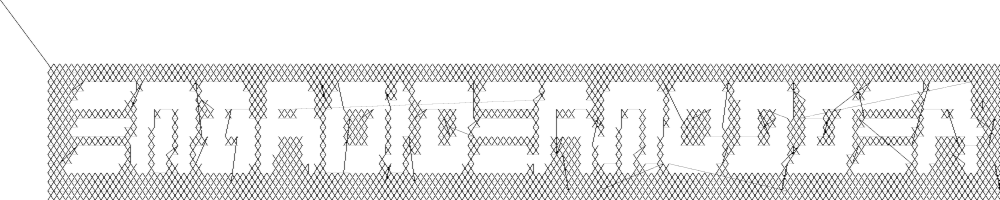

Embroidermodder Reference Manual¶
2.0.0-alpha¶
Introduction¶
The Embroidermodder Project and Team¶
The Embroidermodder 2 project is a collection of small software utilities for manipulating, converting and creating embroidery files in all major embroidery machine formats. The program Embroidermodder 2 itself is a larger graphical user interface (GUI) which is at the heart of the project.
The tools and associated documents are:
The website https://www.libembroidery.org
This reference manual covering the development of all these projects with
the current version available here: https://www.libembroidery.org/embroidermodder_2.0_manual.pdf} * The GUI Embroidermodder 2 covered in Chapter~ref{GUI}. * The core library of low-level functions: libembroidery, covered in Chapter~ref{libembroidery} * The CLI embroider, which is part of libembroidery * Mobile embroidery format viewers and tools convered in Chapter~ref{Mobile}. * Specs for an open source hardware embroidery machine extension called the Portable Embroidery Tool (PET) which is also part of libembroidery. See Chapter~ref{PET}.
The website, this manual and some scripts to construct the distribution are maintained in citep{embroidermodder_website}.
They all tools to make the standard user experience of working with an embroidery machine better without expensive software which is locked to specific manufacturers and formats. But ultimately we hope that the core Embroidermodder 2 is a practical, ever-present tool in larger workshops, small cottage industry workshops and personal hobbyist’s bedrooms.
Embroidermodder 2 is licensed under the zlib license and we aim to keep all of our tools open source and free of charge. If you would like to support the project check out our Open Collective (https://opencollective.com/embroidermodder) group. If you would like to help, please join us on GitHub. This document is written as developer training as well helping new users (see the last sections) so this is the place to learn how to start changing the code.
The Embroidermodder Team is the collection of people who’ve submitted patches, artwork and documentation to our three projects. The team was established by Jonathan Greig and Josh Varga. The full list is actively maintained below.
Core Development Team¶
Embroidermodder 2:
Jonathan Greig (https://github.com/redteam316)
Josh Varga (https://github.com/JoshVarga)
Robin Swift (https://github.com/robin-swift)
Embroidermodder 1:
Josh Varga (https://github.com/JoshVarga)
Mark Pontius (http://sourceforge.net/u/mpontius/profile)
Scraps¶
For Embroidermodder 2.0.0-alpha4, libembroidery 1.0.0-alpha, PET 1.0.0-alpha and EmbroideryMobile 1.0.0-alpha.
Since the document is shipped automatically try to update the revnumber each time you edit using revision.sh.
Test these:
sudo apt install latexml texlive-latex-base imagemagick info2man
# For our command line tools: makeinfo embroider.texi -o embroider.info info2man embroider.info > embroider.1 texi2pdf embroider.texi # Or groff macro package for example ms. # These may be housed in libembroidery since they’re to be shipped as part of # the embroider tarball.
# For online documentation: pandoc embroidermodder_refman.tex -f latex -t html -s -o emb_refman.html –bibliography embroidermodder.bib # Or latexml/latexmlpost
Command Language¶
Printer Command Language (PCL), see citet{packard1992pcl}.
HP-GL/2 Vector Graphics index{HP-GL/2} described in citet{packard1992pcl}. Has commands like: texttt{PU} Pen Up, texttt{PR} Plot Relative, texttt{EP} edge polygon.
So commands read like this:
PA40,10;
command argument seperator(,) argument terminator(;)
Constructing new commands from old ones in the command language is less natural in the HP-GL/2 language, but a similar layer for us is the tajima DST format citep{4} for existing printers and CNC commands for direct control… where’d we’d use G-Code citep{7} and Linux CNC citep{6}.
Could we setpagedevice to a printer in some cases and a similar CUPS service for embroidery machines in others?
All systems are supported by ghostscript, when you account for homebrew citet{9}:
brew update brew upgrade brew install ghostscript brew cleanup
Vector graphic logos don’t require the SVG Qt library.
Man Pages¶
We maintain a traditional manpage for texttt{embroider} using the basic macros.
Arduino¶
apt-get install avr-libc gcc-avr uisp avrdude
Libembroidery¶
(Under construction, please wait for v1.0 release.)
Libembroidery is a low-level library for reading, writing, and altering digital embroidery files in C. It is part of the Embroidermodder Project for open source machine embroidery.
Libembroidery is the underlying library that is used by Embroidermodder 2
and is developed by The Embroidermodder Team ref{the-embroidermodder-team}.
A full list of contributors to the project is maintained in
the Embroidermodder 2 github (https://github.com/Embroidermodder/embroidermodder)
in the file CREDITS.md. It handles over 45 different embroidery specific formats as well
as several non-embroidery specific vector formats.
It also includes a CLI called embroider that allows for better automation of
changes to embroidery files and will be more up-to date than
the Embroidermodder 2 GUI.
Documentation¶
Libembroidery is documented as part of this reference manual. If you need libembroidery for any non-trivial usage or want to contribute to the library we advise you read the appropriate design sections of the manual first. Copies of this manual will be shipped with the packaged version of libembroidery, but to build it we use the Doxyfile in https://github.com/Embroidermodder/embroidermodder} the Embroidermodder git repository.
For more basic usage, embroider should have some in-built help starting with:
$ embroider –help
License¶
Libembroidery is distributed under the permissive zlib licence, see the LICENCE file.
Demos¶
We’re currently trying out some fill techniques which will be demonstrated here
and in the script qa_test.sh.
Converts to:
Build¶
libembroidery and EmbroiderModder 2 use CMake builds so if you are building the project to use as a library we recommend you run:
This builds both the static and shared versions of the library as well as the command line program embroider.
[packard1992pcl] [linuxcncsrc] [linuxcnc] [adobe1990postscript] [postscript1999postscript] [eduTechDST] [cups] [millOperatorsManual] [oberg1914machinery] [dxf_reference] [embroidermodder_source_code] [libembroidery_source_code] [acatina] [kde_tajima] [wotsit_archive] [wotsit_siterip] [fineemb_dst] [edutechwiki_dst]
References¶
FIXME
FIXME
FIXME
FIXME
FIXME
FIXME
FIXME
FIXME
FIXME
FIXME
FIXME
FIXME
FIXME
FIXME
FIXME
FIXME
FIXME fineemb dst
FIXME edutechwiki dst
## Graphical User Interface for PC} ref{GUI}
### Overview}
emph{UNDER MAJOR RESTRUCTURING, PLEASE WAIT FOR VERSION 2}
https://www.libembroidery.org}
Embroidermodder is a free machine embroidery application. The newest version, Embroidermodder 2 can:
edit and create embroidery designs
estimate the amount of thread and machine time needed to stitch a design
convert embroidery files to a variety of formats
upscale or downscale designs
run on Windows, Mac and Linux
emph{Embroidermodder 2} is very much a work in progress since we’re doing a ground up rewrite to an interface in C using the GUI toolkit SDL2. The reasoning for this is detailed in the issues tab.
For a more in-depth look at what we are developing read our website (https://www.libembroidery.org}) which includes these docs as well as the up-to date printer-friendly versions. These discuss recent changes, plans and has user and developer guides for all the Embroidermodder projects.
To see what we’re focussing on right now, see the Open Collective News (https://opencollective.com/embroidermodder}).
// fixme This current printer-friendly version is here (https://www.libembroidery.org/EM2.0.0-alpha_refman_a4.pdf}).
### License}
The source code is under the terms of the zlib license: see LICENSE.md in the source code directory.
Permission is granted to copy, distribute and/or modify this document under the terms of the GNU Free Documentation License, Version 1.3 or any later version published by the Free Software Foundation; with no Invariant Sections, no Front-Cover Texts, and no Back-Cover Texts.
A copy of the license is included in Section~ref{GNU-free-documentation-license}.
### Build and Install}
Assuming you already have the SDL2 libraries you can proceed to using the fast build, which assumes you want to build and test locally.
The fast build should be:
begin{verbatim} bash build.sh end{verbatim}
or, on Windows:
begin{verbatim} .build.bat end{verbatim}
Then run using the run.bat or run.sh scripts in the build/ directory.
Otherwise, follow the instructions below.
If you plan to install the dev version to your system (we recommend you wait for the official installers and beta release first) then use the CMake build instead.
### Install on Desktop}
We recommend that if you want to install the development version you use the CMake build. Like this:
git submodule –init –update
mkdir build cd build cmake .. cmake –build . sudo cmake –install .
These lines are written into the file:
./build_install.sh
On Windows use the next section.
History¶
Embroidermodder 1 was started by Mark Pontius in 2004 while staying up all night with his son in his first couple months. When Mark returned to his day job, he lacked the time to continue the project. Mark made the decision to focus on his family and work, and in 2005, Mark gave full control of the project to Josh Varga so that Embroidermodder could continue its growth.
Embroidermodder 2 was conceived in mid 2011 when Jonathan Greig and Josh Varga discussed the possibility of making a cross-platform version. It is currently in active development and will run on GNU/Linux, Mac OS X, Microsoft Windows and Raspberry Pi.
All Embroidermodder downloads (downloads.html) are hosted on SourceForge.
The source code for Embroidermodder 1 (http://sourceforge.net/p/embroidermodder/code/HEAD/tree/embroidermodder1}) has always been hosted on Sourceforge.
The source code for Embroidermodder 2 (https://github.com/Embroidermodder/Embroidermodder}) was moved to GitHub on July 18, 2013.
The website for Embroidermodder (https://github.com/Embroidermodder/www.libembroidery.org}) was moved to GitHub on September 9, 2013.
# Contact us}
For general questions email: embroidermodder at gmail.com (mailto:embroidermodder@gmail.com})
To request a new feature open an issue on the main Embroidermodder GitHub repository (https://github.com/Embroidermodder/Embroidermodder/issues}). We’ll move it to the correct repository.
# Downloads}
## Alpha Build}
This is a highly experimental build: we recommend users wait for the beta release when the basic features are functional.
Visit our GitHub Releases page (https://github.com/Embroidermodder/Embroidermodder/releases) for the current build. Unfortunately, earlier builds went down with the Sourceforge page we hosted them on.
# GUI}
Embroidermodder 2 is very much a work in progress since we’re doing a ground up rewrite to an interface in Python using the GUI toolkit Tk. The reasoning for this is detailed in the issues tab.
For a more in-depth look at what we are developing read the developer notes (link to dev notes section). This discusses recent changes in a less formal way than a changelog (since this software is in development) and covers what we are about to try.
Documentation¶
The documentation is in the form of the website (included in the docs/ directory) and the printed docs in this file.
Development¶
If you wish to develop with us you can chat via the contact email on the
website (https://www.libembroidery.org}) or in the issues tab on the
github page (https://github.com/Embroidermodder/Embroidermodder/issues}).
People have been polite and friendly in these conversations and I (Robin) have
really enjoyed them. If we do have any arguments please note we have a Code of
Conduct (CODE_OF_CONDUCT.md) so there is a consistent policy to enforce when
dealing with these arguments.
The first thing you should try is building from source using the build advice(link to build) above. Then read some of the development notes (link to dev notes.md) to get the general layout of the source code and what we are currently planning.
Testing¶
To find unfixed errors run the tests by launching from the command line with:
$ embroidermodder --test
then dig through the output. It’s currently not worth reporting the errors, since there are so many but if you can fix anything reported here you can submit a PR.
Code Optimisations and Simplifications¶
Geometry¶
The geometry is stored, processed and altered via libembroidery. See the Python specific part of the documentation for libembroidery for this. What the code in Embroidermodder does is make the GUI widgets to change and view this information graphically.
For example if we create a circle with radius 10mm and center at (20mm, 30mm) then fill it with stitches the commands would be
from libembroidery import Pattern, Circle, Vector, satin
circle = Circle(Vector(20, 30), 10)
pattern = Pattern()
pattern.add_circle(circle, fill=satin)
pattern.to_stitches()
but the user would do this through a series of GUI actions:
Create new file
Click add circle
Use the Settings dialog to alter the radius and center
Use the fill tool on circle
Select satin from the drop down menu
So EM2 does the job of bridging that gap.
Postscript Support¶
In order to safely support user contributed/shared data that can define, for example, double to double functions we need a consistent processor for these descriptions.
Embroidermodder backends to the postscript interpreter included in libembroidery to accomplish this.
For example the string: 5 2 t mul add is equivalent to
the expression 2*t + 5.
The benefit of not allowing this to simply be a Python expression is that it is safe against malicious use, or accidental misuse. The program can identify whether the output is of the appropriate form and give finitely many calculations before declaring the function to have run too long (stopping equations that hang).
To see examples of this see the texttt{assets/shapes/*.ps} files.
SVG Icons¶
To make the images easier to alter and restyle we could switch to svg icons. There’s some code in the git history to help with this.
The Actions System¶
In order to simplify the development of a GUI that is flexible and easy to understand to new developers we have a custom action system that all user actions will go via an texttt{actuator} that takes a string argument. By using a string argument the undo history is just an array of strings.
The C action_hash_data struct will contain: the icon used, the
labels for the menus and tooltips and the function pointer for that action.
There will be an accompanying argument for this function call, currently being
drafted as action_call. So when the user makes a function call it should
contain information like the mouse position, whether special key is pressed etc.
Accessibility¶
Software can be more or less friendly to people with dyslexia, partial sightedness, reduced mobility and those who don’t speak English. Embroidermodder 2 has, in its design, the following features to help:
icons for everything to reduce the amount of reading required
the system font is configurable: if you have a dyslexia-friendly font you
can load it * the interface rescales to help with partial-sightedness * the system language is configurable, unfortunately the docs will only be in English but we can try to supply lots of images of the interface to make it easier to understand as a second language * buttons are remappable: XBox controllers are known for being good for people with reduced mobility so remapping the buttons to whatever setup you have should help
Note that most of these features will be released with version 2.1, which is planned for around early 2023.
### Sample Files}
Various sample embroidery design files can be found in the embroidermodder2/samples folder.
### Shortcuts}
A shortcut can be made up of zero or more modifier keys and at least one non-modifier key pressed at once.
To make this list quickly assessable, we can produce a list of hashes which are simply the flags ORed together.
The shortcuts are stored in the csv file shortcuts.csv as a 5-column table with the first 4 columns describing the key combination. This is loaded into the shortcuts TABLE. Each tick the program checks the input state for this combination by first translating the key names into indices for the key state, then checking for whether all of them are set to true.
### Removed Elements}
So I’ve had a few pieces of web infrastructure fail me recently and I think it’s worth noting. An issue that affects us is an issue that can effect people who use our software.
### Qt and dependencies}
Downloading and installing Qt has been a pain for some users (46Gb on possibly slow connections).
I’m switching to FreeGLUT 3 (which is a whole other conversation) which means we can ship it with the source code package meaning only a basic build environment is necessary to build it.
### Social Platform}
Github is giving me a server offline (500) error and is still giving a bad ping.
So… all the issues and project boards etc. being on Github is all well and good assuming that we have our own copies. But we don’t if Github goes down or some other major player takes over the space and we have to move (again, since this started on SourceForge).
This file is a backup for that which is why I’m repeating myself between them.
### OpenGL}
OpenGL rendering within the application. This will allow for Realistic Visualization - Bump Mapping/OpenGL/Gradients?
This should backend to a C renderer or something.
### Configuration Data Ideas}
Embroidermodder should boot from the command line regardless of whether it is or is not installed (this helps with testing and running on machines without root). Therefore, it can create an initiation file but it won’t rely on its existence to boot: ~/.embroidermodder/config.json.
Switch colors to be stored as 6 digit hexcodes with a #.
We’ve got close to a hand implemented ini read/write setup in settings.py.
Distribution¶
distribution
When we release the new pip wheel we should also package:
.tar.gzand.zipsource archive.Debian package
RPM package
Only do this once per minor version number.
Perennial Jobs¶
Check for memory leaks
Clear compiler warnings on -Wall -ansi -pedantic for C.
Write new tests for new code.
Get Embroidermodder onto the current version of libembroidery.
PEP7 compliance.
Better documentation with more photos/screencaps.
Full Test Suite¶
testing
(This needs a hook from Embroidermodder to embroider’s full test suite.)
The flag --full-test-suite runs all the tests that have been written.
Since this results in a lot of output the details are both to stdout
and to a text file called test_matrix.txt.
Patches that strictly improve the results in the test_matrix.txt over
the current version will likely be accepted and it’ll be a good place
to go digging for contributions. (Note: strictly improve means that
the testing result for each test is as good a result, if not better.
Sacrificing one critera for another would require some design work
before we would consider it.)
Symbols¶
symbols
Symbols use the SVG path syntax.
In theory, we could combine the icons and symbols systems, since they could be rendered once and stored as icons in Qt. (Or as textures in FreeGLUT.)
Also we want to render the patterns themselves using SVG syntax, so it would save on repeated work overall.
Features¶
Bindings¶
bindings
Bindings for libembroidery are maintained for the languages we use internally in the project, for other languages we consider that the responsibility of other teams using the library.
So libembroidery is going to be supported on:
C(by default)C++(also by default)Java(for the Android Android application MobileViewer)Swift(for the iOS iOS application iMobileViewer)
For C# C-sharp we recommend directly calling the function directly
using the DllImport feature:
/* Calling readCsv() via C# as a native function. */ [DllImport(“libembroidery.so”, EntryPoint=”readCsv”)]
see this StackOverflow discussion for help: https://stackoverflow.com/questions/11425202/is-it-possible-to-call-a-c-function-from-c-net
For Python you can do the same using ctypes: https://www.geeksforgeeks.org/how-to-call-a-c-function-in-python/
Other Supported Thread Brands¶
supported threads
The thread lists that aren’t preprogrammed into formats but are indexed in the data file for the purpose of conversion or fitting to images/graphics.
Arc Polyester
Arc Rayon
Coats and Clark Rayon
Exquisite Polyester
Fufu Polyester
Fufu Rayon
Hemingworth Polyester
Isacord Polyester
Isafil Rayon
Marathon Polyester
Marathon Rayon
Madeira Polyester
Madeira Rayon
Metro Polyester
Pantone
Robison Anton Polyester
Robison Anton Rayon
Sigma Polyester
Sulky Rayon
ThreadArt Rayon
ThreadArt Polyester
ThreaDelight Polyester
Z102 Isacord Polyester
House Style¶
A basic set of guidelines to use when submitting code.
Naming Conventions¶
Name variables and functions intelligently to minimize the need for comments. It should be immediately obvious what information it represents. Short names such as x and y are fine when referring to coordinates. Short names such as i and j are fine when doing loops.
Variable names should be camelCase, starting with a lowercase word followed by uppercase word(s).
C++ Class Names should be CamelCase, using all uppercase word(s).
C Functions that attempt to simulate namespacing, should be “nameSpace_camelCase”.
All files and directories shall be lowercase and contain no spaces.
Code Style¶
Tabs should not be used when indenting. Setup your IDE or text editor to use 4 spaces.
If you use KATE (KDE Advanced Text Editor), modelines are included in our code to enforce some of our coding standards. When creating new C/C++ files, please add the modeline to the bottom of the file followed by a blank line. Always make sure there is an extra blank line at the end of a file.
When using braces, please put the brace on a new line, unless the code is specially formatted for easier reading such as a block of one liner if/else statements.
Use exceptions sparingly.
if/else is preferred over switch/case.
Do not use ternary operator (?:) in place of if/else.
Do not repeat a variable name that already occurs in an outer scope.
Version Control¶
Being an open source project, developers can grab the latest code at any time and attempt to build it themselves. We try our best to ensure that it will build smoothly at any time, although occasionally we do break the build. In these instances, please provide a patch, pull request which fixes the issue or open an issue and notify us of the problem, as we may not be aware of it and we can build fine.
Try to group commits based on what they are related to: features/bugs/comments/graphics/commands/etc…
Brevity¶
Readable source code is short. Developers have finite time and becoming
acquainted with more than 1000 lines of dense C code is often too high a bar
for a new developer to a project. However, this leads to a bunch of tradeoffs
that have caused issues, so instead we consider the minimal library
rather than minimal code approach. Not everyone will have used the more
abstract, syntactic features of C++ like templates and operator overloading.
Even if they are capable developers with these features it makes debugging far
harder since the choice of called function is interpreted by the compiler and compiler
errors are hundred line monsters per infraction of these are all of the possible
variations of this function that don't match.
Using C++’s unordered_map can simplify source code in that anything can
map to anything. However, it also means we don’t have to associate related structures.
For example the action_table came together replacing a collection of unordered maps
with one, then replaced the mapping with labelled indices. Since the actuator_core
is a giant switch/case statement this cuts the step of identifying the action by its
label std::string.
The structure given by this table allowed the code to be much
easier to interpret. So for this reason we don’t recommend the use unordered maps or hashes any more.
Rigidity Vs. Ease of Modification¶
Difficult to restructure code is good if the structure that’s there is good. It guides new developers into safe practices without having to explain them. Therefore we want ease of modification that comes from well chosen structs and a carefully curated global header of .
Developer Prose¶
Macro Policy¶
Macros are great, you can do all sorts with them. But it’s easy to make readable short code that is really difficult to safely modify.
Function Style¶
1. Don’t write a new convenience function unless there are two existing applications of it in the source code. 2.
Summary¶
.
GUI Design¶
GUI
Embroidermodder 2 was written in C++/Qt5 and it was far too complex. We had issues with people not able to build from source because the Qt5 libraries were so ungainly. So I decided to do a rewrite in C/SDL2 (originally FreeGLUT, but that was a mistake) with data stored as YAML. This means linking 4-7 libraries depending on your system which are all well supported and widely available.
This is going well, although it’s slow progress as I’m trying to keep track of the design while also doing a ground up rewrite. I don’t want to throw away good ideas. Since I also write code for libembroidery my time is divided.
Overview of the UI rewrite
(Problems to be solved in brackets.)
It’s not much to look at because I’m trying to avoid using an external widgets system, which in turn means writing things like toolbars and menubars over. If you want to get the design the actuator is the heart of it.
Without Qt5 we need a way of assigning signals with actions, so this is what I’ve got: the user interacts with a UI element, this sends an integer to the actuator that does the thing using the current state of the mainwindow struct of which we expect there to be exactly one instance. The action is taken out by a jump table that calls the right function (most of which are missing in action and not connected up properly). It also logs the number, along with key parts of the main struct in the undo history (an unsolved problem because we need to decide how much data to copy over per action). This means undo, redo and repeat actions can refer to this data.
To Do¶
These should be sorted into relevant code sections.
Current work¶
EmbPattern *pattern as a variable in the View class.
Removing the now unnecessary SaveObject class.
Converting all comments to C style.
Switching away from Doxygen-style in favour of direct commentary and a custom written reference manual.
Documentation¶
Document all tests.
Automation of tests.
Ensure that the stitch count matches what we know the file has
2.0 alpha1¶
WIP - Statistics from 1.0, needs histogram
WIP - Saving DST/PES/JEF (varga)
WIP - Saving CSV/SVG (rt) + CSV read/write UNKNOWN interpreted as COLOR bug
2.0 alpha2¶
Notify user of data loss if not saving to an object format.
Import Raster Image
SNAP/ORTHO/POLAR
Layer Manager + LayerSwitcher DockWidget
Reading DXF
2.0 alpha3¶
Writing DXF
Amount of Thread and Machine Time Estimation (also allow customizable times for setup, color changes, manually trimming jump threads, etc. that way a realistic total time can be estimated)
Otto Theme Icons - whatsthis icon doesn’t scale well, needs redone
embroidermodder2.ico 16 x 16 looks horrible
2.0 alpha4¶
WIP - CAD Command: Arc (rt)
Load/Save Menu/Toolbars configurations into settings.ini
2.0 beta1¶
Custom Filter Bug - doesn’t save changes in some cases
Cannot open file with # in name when opening multiple files (works fine when opening the single file)
Closing Settings Dialog with the X in the window saves settings rather than discards them
WIP - Advanced Printing
Filling Algorithms (varga)
Otto Theme Icons - beta (rt) - Units, Render, Selectors
2.0 rc1¶
Review KDE4 Thumbnailer
Documentation for libembroidery and formats
HTML Help files
Update language translations
CAD Command review: line
CAD Command review: circle
CAD Command review: rectangle
CAD Command review: polygon
CAD Command review: polyline
CAD Command review: point
CAD Command review: ellipse
CAD Command review: arc
CAD Command review: distance
CAD Command review: locatepoint
CAD Command review: move
CAD Command review: rgb
CAD Command review: rotate
CAD Command review: scale
CAD Command review: singlelinetext
CAD Command review: star
Clean up all compiler warning messages, right now theres plenty :P
2.0 release¶
tar.gz archive
zip archive
Debian Package (rt)
NSIS Installer (rt)
Mac Bundle?
press release
2.x/Ideas¶
libembroidery.mk for MXE project (refer to qt submodule packages for qmake based building. Also refer to plibc.mk for example of how write an update macro for github.)
libembroidery safeguard for all writers - check if the last stitch is an END stitch. If not, add an end stitch in the writer and modify the header data if necessary.
Cut/Copy - Allow Post-selection
CAD Command: Array
CAD Command: Offset
CAD Command: Extend
CAD Command: Trim
CAD Command: BreakAtPoint
CAD Command: Break2Points
CAD Command: Fillet
CAD Command: Chamfer
CAD Command: Split
CAD Command: Area
CAD Command: Time
CAD Command: PickAdd
CAD Command: Product
CAD Command: Program
CAD Command: ZoomFactor
CAD Command: GripHot
CAD Command: GripColor and GripCool
CAD Command: GripSize
CAD Command: Highlight
CAD Command: Units
CAD Command: Grid
CAD Command: Find
CAD Command: Divide
CAD Command: ZoomWindow (Move out of view.cpp)
Command: Web (Generates Spiderweb patterns)
Command: Guilloche (Generates Guilloche patterns)
Command: Celtic Knots
Command: Knotted Wreath
Lego Mindstorms NXT/EV3 ports and/or commands.
native function that flashes the command prompt to get users attention when using the
prompt is required for a command. * libembroidery-composer like app that combines multiple files into one. * Settings Dialog, it would be nice to have it notify you when switching tabs that a setting has been changed. Adding an Apply button is what would make sense for this to happen. * Keyboard Zooming/Panning * G-Code format? * 3D Raised Embroidery * Gradient Filling Algorithms * Stitching Simulation * RPM packages? * Reports? * Record and Playback Commands * Settings option for reversing zoom scrolling direction * Qt GUI for libembroidery-convert * EPS format? Look at using Ghostscript as an optional add-on to libembroidery * optional compile option for including LGPL/GPL libs etc. with warning to user about license requirements. * Realistic Visualization - Bump Mapping/OpenGL/Gradients? * Stippling Fill * User Designed Custom Fill * Honeycomb Fill * Hilburt Curve Fill * Sierpinski Triangle fill * Circle Grid Fill * Spiral Fill * Offset Fill * Brick Fill * Trim jumps over a certain length. * FAQ about setting high number of jumps for more controlled trimming. * Minimum stitch length option. (Many machines also have this option too) * Add ‘Design Details’ functionality to libembroidery-convert * Add ‘Batch convert many to one format’ functionality to libembroidery-convert * EmbroideryFLOSS - Color picker that displays catalog numbers and names. * emscripten/javascript port of libembroidery
Arduino¶
Fix emb-outline files
Fix thread-color files
Logging of Last Stitch Location to External USB Storage(commonly available and easily replaced), wait until TRE is available to avoid rework
inotool.org - seems like the logical solution for Nightly/CI builds
Smoothieboard experiments
libembroidery-tests¶
looping test that reads 10 times while running valgrind. See
embPattern_loadExternalColorFile()Arduino leak note for more info.todo sort todo list.
Alpha: High priority * Statistics from 1.0, needs histogram * Saving DST/PES/JEF (varga) * Saving CSV/SVG (rt) + CSV read/write UNKNOWN interpreted as COLOR bug
Alpha: medium priority * Notify user of data loss if not saving to an object format. * Import Raster Image * SNAP/ORTHO/POLAR * Layer Manager + LayerSwitcher DockWidget * Reading DXF
Alpha: low priority * Writing DXF* Up and Down keys cycle thru commands in the command prompt * Amount of Thread, Machine Time Estimation (also allow customizable times for setup, color changes, manually trimming jump threads, etc…that way a realistic total time can be estimated) * Otto Theme Icons - whatsthis icon doesn’t scale well, needs redone * embroidermodder2.ico 16 x 16 looks horrible
Alpha: lower priority * CAD Command: Arc (rt)
beta * Custom Filter Bug - doesn’t save changes in some cases * Cannot open file with # in name when opening multiple files (works fine when opening the single file) * Closing Settings Dialog with the X in the window saves settings rather than discards them * Advanced Printing * Filling Algorithms (varga) * Otto Theme Icons - beta (rt) - Units, Render, Selectors
Finish before 2.0 release * QDoc Comments * Review KDE4 Thumbnailer * Documentation for libembroidery and formats * HTML Help files * Update language translations * CAD Command review: line * CAD Command review: circle * CAD Command review: rectangle * CAD Command review: polygon * CAD Command review: polyline * CAD Command review: point * CAD Command review: ellipse * CAD Command review: arc * CAD Command review: distance * CAD Command review: locatepoint * CAD Command review: move * CAD Command review: rgb * CAD Command review: rotate * CAD Command review: scale * CAD Command review: singlelinetext * CAD Command review: star * Clean up all compiler warning messages, right now theres plenty :P
2.0 * tar.gz archive * zip archive * Debian Package (rt) * NSIS Installer (rt) * Mac Bundle? * press release
2.x/Ideas * libembroidery.mk for MXE project (refer to qt submodule packages for qmake based building. Also refer to plibc.mk for example of how write an update macro for github.) * libembroidery safeguard for all writers - check if the last stitch is an END stitch. If not, add an end stitch in the writer and modify the header data if necessary. * Cut/Copy - Allow Post-selection * CAD Command: Array * CAD Command: Offset * CAD Command: Extend * CAD Command: Trim * CAD Command: BreakAtPoint * CAD Command: Break2Points * CAD Command: Fillet * CAD Command: Chamfer * CAD Command: Split * CAD Command: Area * CAD Command: Time * CAD Command: PickAdd * CAD Command: Product * CAD Command: Program * CAD Command: ZoomFactor * CAD Command: GripHot * CAD Command: GripColor and GripCool * CAD Command: GripSize * CAD Command: Highlight * CAD Command: Units * CAD Command: Grid * CAD Command: Find * CAD Command: Divide * CAD Command: ZoomWindow (Move out of view.cpp) * Command: Web (Generates Spiderweb patterns) * Command: Guilloche (Generates Guilloche patterns) * Command: Celtic Knots * Command: Knotted Wreath * Lego Mindstorms NXT/EV3 ports and/or commands. * native function that flashes the command prompt to get users attention when using the prompt is required for a command. * libembroidery-composer like app that combines multiple files into one. * Settings Dialog, it would be nice to have it notify you when switching tabs that a setting has been changed. Adding an Apply button is what would make sense for this to happen. * Keyboard Zooming/Panning * G-Code format? * 3D Raised Embroidery * Gradient Filling Algorithms * Stitching Simulation * RPM packages? * Reports? * Record and Playback Commands * Settings option for reversing zoom scrolling direction * Qt GUI for libembroidery-convert * EPS format? Look at using Ghostscript as an optional add-on to libembroidery… * optional compile option for including LGPL/GPL libs etc… with warning to user about license requirements. * Realistic Visualization - Bump Mapping/OpenGL/Gradients? * Stippling Fill * User Designed Custom Fill * Honeycomb Fill * Hilbert Curve Fill * Sierpinski Triangle fill * Circle Grid Fill * Spiral Fill * Offset Fill * Brick Fill * Trim jumps over a certain length. * FAQ about setting high number of jumps for more controlled trimming. * Minimum stitch length option. (Many machines also have this option too) * Add ‘Design Details’ functionality to libembroidery-convert * Add ‘Batch convert many to one format’ functionality to libembroidery-convert * EmbroideryFLOSS - Color picker that displays catalog numbers and names.
beta * Realistic Visualization - Bump Mapping/OpenGL/Gradients? * Get undo history widget back (BUG). * Mac Bundle, .tar.gz and .zip source archive. * NSIS installer for Windows, Debian package, RPM package * GUI frontend for embroider features that aren’t supported by embroidermodder: flag selector from a table * Update all formats without color to check for edr or rgb files. * Setting for reverse scrolling direction (for zoom, vertical pan) * Keyboard zooming, panning * New embroidermodder2.ico 16x16 logo that looks good at that scale. * Saving dst, pes, jef. * Settings dialog: notify when the user is switching tabs that the setting has been changed, adding apply button is what would make sense for this to happen. * Update language translations. * Replace KDE4 thumbnailer. * Import raster image. * Statistics from 1.0, needs histogram. * SNAP/ORTHO/POLAR. * Cut/copy allow post-selection. * Layout into config. * Notify user of data loss if not saving to an object format. * Add which formats to work with to preferences. * Cannot open file with # in the name when opening multiple files but works with opening a single file. * Closing settings dialog with the X in the window saves settings rather than discarding them. * Otto theme icons: units, render, selectors, what’s this icon doesn’t scale. * Layer manager and Layer switcher dock widget. * Test that all formats read data in correct scale (format details should match other programs). * Custom filter bug – doesn’t save changes in some cases. * Tools to find common problems in the source code and suggest fixes to the developers. For example, a translation miss: that is, for any language other than English a missing entry in the translation table should supply a clear warning to developers. * Converting Qt C++ version to native GUI C throughout. * OpenGL Rendering: Real rendering to see what the embroidery looks like, Icons and toolbars, Menu bar. * Libembroidery interfacing: get all classes to use the proper libembroidery types within them. So Ellipse has EmbEllipse as public data within it. * Move calculations of rotation and scaling into EmbVector calls. * GUI frontend for embroider features that aren’t supported by embroidermodder: flag selector from a table * Update all formats without color to check for edr or rgb files. * Setting for reverse scrolling direction (for zoom, vertical pan) * Keyboard zooming, panning * Better integrated help: I don’t think the help should backend to a html file somewhere on the user’s system. A better system would be a custom widget within the program that’s searchable. * New embroidermodder2.ico 16x16 logo that looks good at that scale. * Settings dialog: notify when the user is switching tabs that the setting has been changed, adding apply button is what would make sense for this to happen.
Introduction¶
The Embroidermodder 2 project is a collection of small software utilities for manipulating, converting and creating embroidery files in all major embroidery machine formats. The program textit{Embroidermodder 2} itself is a larger graphical user interface (GUI) which is at the heart of the project.
This manual, the website (embroidermodder.org), mobile embroidery format viewers and tools (iMobileViewer, MobileViewer), the core library of functions (libembroidery) and CLI (embroider) are all tools to make the standard user experience of working with an embroidery machine better without expensive software which is locked to specific manufacturers and formats. But ultimately we hope that the core textit{Embroidermodder 2} is a practical, ever-present tool in larger workshops, small cottage industry workshops and personal hobbyist’s bedrooms.
Embroidermodder 2 is licensed under the zlib license and we aim to keep all of our tools open source and free of charge. If you would like to support the project check out our Open Collective group. If you would like to help, please join us on GitHub. This document is written as developer training as well helping new users (see the last sections) so this is the place to learn how to start changing the code.
The Graphical User Interface: Embroidermodder 2.0.0-alpha¶
Abstract¶
Overview¶
Features¶
Embroidermodder 2 has many advanced features that enable you to create awesome designs quicker, tweak existing designs to perfection, and can be fully customized to fit your workflow.
A summary of these features:
Cross Platform
Realistic rendering
Various grid types and auto-adjusting rulers
Many measurement tools
Add text to any design
Supports many formats
Batch Conversion
Scripting API
Cross Platform¶
If you use multiple operating systems, it’s important to choose software that works on all of them.
Embroidermodder 2 runs on Windows, Linux and Mac OS X. Let’s not forget the Raspberry Pi (http://www.raspberrypi.org).
Realistic Rendering¶
It is important to be able to visualize what a design will look like when stitched and our pseudo 3D realistic rendering helps achieve this.
Realistic rendering sample #1:
Realistic rendering sample #2:
Realistic rendering sample #3:
Various grid types and auto-adjusting rulers
Making use of the automatically adjusting ruler in conjunction with the grid will ensure your design is properly sized and fits within your embroidery hoop area.
Use rectangular, circular or isometric grids to construct your masterpiece!
Multiple grids and rulers in action:
Many measurement tools¶
Taking measurements is a critical part of creating great designs. Whether you are designing mission critical embroidered space suits for NASA or some other far out design for your next meet-up, you will have precise measurement tools at your command to make it happen. You can locate individual points or find distances between any 2 points anywhere in the design!
Take quick and accurate measurements:
Add text to any design¶
Need to make company apparel for all of your employees with individual names on them? No sweat. Just simply add text to your existing design or create one from scratch, quickly and easily. Didn’t get it the right size or made a typo? No problem. Just select the text and update it with the property editor.
Add text and adjust its properties quickly:
Supports many formats¶
Embroidery machines all accept different formats. There are so many formats available that it can sometimes be confusing whether a design will work with your machine.
Embroidermodder 2 supports a wide variety of embroidery formats as well as several vector formats, such as SVG and DXF. This allows you to worry less about which designs you can use.
Batch Conversion¶
Need to send a client several different formats? Just use libembroidery-convert, our command line utility which supports batch file conversion.
There are a multitude of formats to choose from:
Scripting API¶
If you’ve got programming skills and there is a feature that isn’t currently available that you absolutely cannot live without, you have the capability to create your own custom commands for Embroidermodder 2. We provide an QtScript API which exposes various application functionality so that it is possible to extend the application without requiring a new release. If you have created a command that you think is worth including in the next release, just <a href=``contact.html``>contact us</a> and we will review it for functionality, bugs, and finally inclusion.
An Embroidermodder 2 command excerpt:
Contributing¶
Version Control¶
Being an open source project, developers can grab the latest code at any time and attempt to build it themselves. We try our best to ensure that it will build smoothly at any time, although occasionally we do break the build. In these instances, please provide a patch, pull request which fixes the issue or open an issue and notify us of the problem, as we may not be aware of it and we can build fine.
Try to group commits based on what they are related to: features/bugs/comments/graphics/commands/etc…
See the coding style [here](#coding-style)
Introduction¶
Basic Features¶
Move a single stitch in an existing pattern¶
and select your file by double clicking the name of the file. Alternatively, left click the file once then click the Open button.
In the `File’ menu
Tip
For users who prefer
Convert one pattern to another format¶
In the File menu, click Open….
The
In the dropdown menu within the save dialog select the
Advanced Features¶
Other Projects¶
Planning¶
To see what’s planned open the [Projects](https://github.com/Embroidermodder/Embroidermodder/projects/1) tab which sorts all of the GitHub Issues into columns.
Format Support¶
Support for Singer FHE, CHE (Compucon) formats?
Embroidermodder Project Coding Standards¶
A basic set of guidelines to use when submitting code.
Naming Conventions¶
Name variables and functions intelligently to minimize the need for comments.
It should be immediately obvious what information it represents.
Short names such as x and y are fine when referring to coordinates.
Short names such as i and j are fine when doing loops.
Variable names should be camelCase, starting with a lowercase word followed by uppercase word(s). C Functions that attempt to simulate namespacing, should be nameSpace_camelCase.
All files and directories shall be lowercase and contain no spaces.
Code Style¶
Tabs should not be used when indenting. Setup your IDE or text editor to use 4 spaces.
Braces¶
For functions: please put each brace on a new line.
void
function_definition(int argument)
{
/* code block */
}
For control statements: please put the first brace on the same line.
if (condition) {
/* code block */
}
Use exceptions sparingly.
Do not use ternary operator (?:) in place of if/else.
Do not repeat a variable name that already occurs in an outer scope.
Version Control¶
Being an open source project, developers can grab the latest code at any time and attempt to build it themselves. We try our best to ensure that it will build smoothly at any time, although occasionally we do break the build. In these instances, please provide a patch, pull request which fixes the issue or open an issue and notify us of the problem, as we may not be aware of it and we can build fine.
Try to group commits based on what they are related to: features/bugs/comments/graphics/commands/etc…
Comments¶
When writing code, sometimes there are items that we know can be improved, incomplete or need special clarification. In these cases, use the types of comments shown below. They are pretty standard and are highlighted by many editors to make reviewing code easier. We also use shell scripts to parse the code to find all of these occurrences so someone wanting to go on a bug hunt will be able to easily see which areas of the code need more love. Use the same convention as libembroidery.
libembroidery is written in C and adheres to C89 standards. This means that any C99 or C++ comments will show up as errors when compiling with gcc. In any C code, you must use:
/* C Style Comments */
/* TODO: This code clearly needs more work or further review. */
/* BUG: This code is definitely wrong. It needs fixed. */
- /* HACK: This code shouldn’t be written this way or I don’t feel
right about it. There may a better solution */
- /* WARNING: Think twice (or more times) before changing this code.
I put this here for a good reason. */
/* NOTE: This comment is much more important than lesser comments. */
Donations¶
Creating software that interfaces with hardware is costly. A summary of some of the costs involved:
Developer time for 2 core developers
Computer equipment and parts
Embroidery machinery
Various electronics for kitbashing Embroiderbot
Consumable materials (thread, fabric, stabilizer, etc…)
If you have found our software useful, please consider funding further development by donating to the project on Open Collective (https://opencollective.com/embroidermodder).
Introduction¶
_(UNDER MAJOR RESTRUCTURING, PLEASE WAIT FOR VERSION 2)_
Embroidermodder is a free machine embroidery application. The newest version, Embroidermodder 2 can:
edit and create embroidery designs
estimate the amount of thread and machine time needed to stitch a design
convert embroidery files to a variety of formats
upscale or downscale designs
run on Windows, Mac and Linux
For more information, see our website cite{thewebsite}.
Embroidermodder 2 is very much a work in progress since we’re doing a ground up rewrite to an interface in Python using the GUI toolkit Tk. The reasoning for this is detailed in the issues tab.
For a more in-depth look at what we are developing read the developer notesfootnote{link to dev notes section}. This discusses recent changes in a less formal way than a changelog (since this software is in development) and covers what we are about to try.
To see what we’re focussing on at the moment check this table.
Date |
Event |
|---|---|
April-June 2022 |
Finish the conversion to C/SDL2 |
July-August 2022 |
Finish all the targets in the Design, or assign them to 2.1. |
September 2022 |
Bugfixing, Testing, QA. libembroidery 1.0 will be released, then updates will slow down and the Embroidermodder 2 development version will be fixed to the API of this version. |
October 2022 |
Embroidermodder 2 is officially released. |
Build and Install¶
### Desktop}
First you must install the dependencies which aren’t compiled into the source:
gitcmakeA C compiler (we recommend gcc or clang)
on Debian Linux/GNU use:
- $ sudo apt install git clang build-essential libsdl2-dev
libsdl2-images-dev libsdl2-ttf-dev
If you can’t find a good fit for your system (on Windows use the section below), try compiling the included submodules with:
$ bash build_deps.sh
From here, on most sytems the command:
$ bash build.sh
will build the software. Currently this is the 2.0-alpha, which will have a build code of some kind.
Dependencies and Build¶
Plans¶
Windows Specific Advice¶
This is one of many possible ways to build the software on Windows, this section is to help people who’ve not got a build environment to start with.
Download and install MSYS2 (follow their instructions): https://www.msys2.org/
Boot
Minttyfrom the Start menu.Use the commands:
Mobile¶
These are currently unsupported (see iMobileViewer and Mobileviewer for iOS and Android respectively), but after the Desktop version is released we’ll work on them.
The Mobile version will share some of the UI and all of the backend, so development of the Desktop version will help us make both.
### Documentation}
The documentation is in the form of the website (included in the docs/ directory) and the printed docs in this file.
Development¶
If you wish to develop with us you can chat via the contact email on the website (https://www.libembroidery.org) or in the issues tab on the github page (https://github.com/Embroidermodder/Embroidermodder/issues). People have been polite and friendly in these conversations and I (Robin) have really enjoyed them. If we do have any arguments please note we have a [Code of Conduct](CODE_OF_CONDUCT.md) so there is a consistent policy to enforce when dealing with these arguments.
The first thing you should try is building from source using the [build advice](link to build) above. Then read some of the [development notes](link to dev notes.md) to get the general layout of the source code and what we are currently planning.
Testing¶
To find unfixed errors run the tests by launching from the command line with:
$ embroidermodder –test
then dig through the output. It’s currently not worth reporting the errors, since there are so many but if you can fix anything reported here you can submit a PR.
Overall Structure¶
Code Optimisations and Simplifications¶
Current¶
What Robin is currently doing.
Getting the code to pass PyLint, that involves getting all source files under 1000 lines, renaming all variables to be in snake case.
Changing the seperation of code between EM and libembroidery.
Translating the Qt widget framework to Tk.
Geometry¶
The geometry is stored, processed and altered via libembroidery. See the Python specific part of the documentation for libembroidery for this. What the code in Embroidermodder does is make the GUI widgets to change and view this information graphically.
For example if we create a circle with radius 10mm and center at (20mm, 30mm) then fill it with stitches the commands would be
from libembroidery import Pattern, Circle, Vector, satin circle = Circle(Vector(20, 30), 10) pattern = Pattern() pattern.add_circle(circle, fill=satin) pattern.to_stitches()
but the user would do this through a series of GUI actions:
Create new file
Click add circle
Use the Settings dialog to alter the radius and center
Use the fill tool on circle
Select satin from the drop down menu
So EM2 does the job of bridging that gap.
Settings Dialog¶
There are many codeblocks for changing out the colors in one go, for example:
self.mw.update_all_view_select_box_colors( self.accept[“display_selectbox_left_color”], self.accept[“display_selectbox_left_fill”], self.accept[“display_selectbox_right_color”], self.accept[“display_selectbox_right_fill”], self.preview[“display_selectbox_alpha”])
This could be replaced with a simpler call
self.mw.update_all_view_select_box_colors( self.accept[“display_selectbox_colors”], self.preview[“display_selectbox_alpha”])
where we require that
self.accept[“display_selectbox_colors”] == { “left_color”: “#color”, “left_fill”: “#color”, “right_color”: “#color”, “right_fill”: “#color” }
with #color being some valid hex code.
Kivy¶
Once the tkinter interface is up and running we can experiment with different frontends to improve the look of the application. For example, the MIT licensed KIVY would allow us to replace the mobile development in Swift and Java with all Python development:
Data/Code Seperation¶
All the “data” is in code files that are within the config/ submodule. So this way we don’t have to deal with awkward data packaging, it’s just available as a single JSON style object called settings available with this import line:
from embroidermodder.config import settings
In order to pass PyLint style guides this will be split up and formatted into Python code but no processing beyond inlining the data into a single dict should be carried out here.
The Settings Dictionary¶
No more than 4 levels of indentation
Only strings, arrays, dicts and integers so matching the JSON standard. Ideally you should be able to copy/paste the data in and out and it would parse as JSON. Currently this fails because we have multi-line strings in Python syntax and inlining.
We may be able to extend the lisp support, which would deal with this. Or we can change multiline strings out for arrays of strings.
Lisp Expression Support¶
In order to safely support user contributed/shared data that can define, for example, double to double functions we need a consistent processor for these descriptions.
Embroidermodder uses a list processor (a subset of the language Lisp which is short for LISt Processor) to accomplish this.
For example the string:
(+ (* t 2) 5)
is equivalent to the expression:
2*t + 5
The benefit of not allowing this to simply be a Python expression is that it is safe against malicious use, or accidental misuse. The program can identify whether the output is of the appropriate form and give finitely many calculations before declaring the function to have run too long (stopping equations that hang).
To see examples of this see parser.py and
config/design_primatives.py.
It’s also worth noting that we don’t use the simpler reverse Polish notation (RPN) approach because:
It’s more compact to use Lisp because a b c + + for example needs a new + sign for each new term as opposed to (+ a b c).
It’s easier to support expressions that are themselves function calls defined by the user (by adding support for defun or lambda.
SVG Icons¶
To make the images easier to alter and restyle we could switch to svg icons. There’s some code in the git history to help with this.
The Actions System¶
In order to simplify the development of a GUI that is flexible and easy to understand to new developers we have a custom action system that all user actions will go via an actuator that takes a string argument. By using a string argument the undo history is just an array of strings.
The C action_hash_data struct will contain: the icon used, the labels for the
menus and tooltips and the function pointer for that action.
There will be an accompanying argument for this function call, currently being
drafted as action_call. So when the user makes a function call it should
contain information like the mouse position, whether special key is pressed
etc.
Accessibility¶
Software can be more or less friendly to people with dylexia, partial sightedness, reduced mobility and those who don’t speak English. Embroidermodder 2 has, in its design, the following features to help:
icons for everything to reduce the amount of reading required
the system font is configurable: if you have a dyslexia-friendly font you can load it
the interface rescales to help with partial-sightedness
the system language is configurable, unfortunately the docs will only be in English but we can try to supply lots of images of the interface to make it easier to understand as a second language
buttons are remappable: XBox controllers are known for being good for people with reduced mobility so remapping the buttons to whatever setup you have should help
Note that most of these features will be released with version 2.1, which is planned for around early 2023.
### Current Work}¶
Converting C++ to Python throughout.
OpenGL Rendering *
Realrendering to see what the embroidery looks like. * Icons and toolbars. * Menu barLibembroidery interfacing: * Get all classes to use the proper libembroidery types within them. So Ellipse has EmbEllipse as public data within it.
Move calculations of rotation and scaling into EmbVector calls.
Get undo history widget back (BUG).
Switch website to a CMake build.
GUI frontend for embroider features that aren’t supported by embroidermodder: flag selector from a table
Update all formats without color to check for edr or rgb files.
EmbroideryFLOSS - Color picker that displays catalog numbers and names
Setting for reverse scrolling direction (for zoom, vertical pan)
Stitching simulation
User designed custom fill
Keyboard zooming, panning
Advanced printing
Libembroidery 1.0
Better integrated help: I don’t think the help should backend to a html file somewhere on the user’s system. A better system would be a custom widget within the program that’s searchable.
New embroidermodder2.ico 16x16 logo that looks good at that scale.
saving dst, pes, jef
Settings dialog: notify when the user is switching tabs that the setting has been changed, adding apply button is what would make sense for this to happen.
Update language translations
Replace KDE4 thumbnailer.
Import raster image
Statistics from 1.0, needs histogram.
SNAP/ORTHO/POLAR
Cut/copy allow post-selection
Layout into config
Notify user of data loss if not saving to an object format.
Add which formats to work with to preferences.
Cannot open file with # in the name when opening multiple files but works with opening a single file.
Closing settings dialog with the X in the window saves settings rather than discarding them.
Otto theme icons: units, render, selectors, what’s this icon doesn’t scale
Layer manager and Layer switcher dock widget
test that all formats read data in correct scale (format details should match other programs).
Custom filter bug – doesn’t save changes in some cases.
Get flake8, pylint and tests to pass.
Sphinx documentation from docstrings or similar.
For more details read on into the Design section.
### Sample Files¶
Various sample embroidery design files can be found in the embroidermodder2/samples folder.
### Design¶
These are key bits of reasoning behind why the software is built the way it is.
### CAD command review¶
### Removed Elements¶
So I’ve had a few pieces of web infrastructure fail me recently and I think it’s worth noting. An issue that affects us is an issue that can effect people who use our software.
### Qt and dependencies}¶
Downloading and installing Qt has been a pain for some users (46Gb on possibly slow connections).
I’m switching to FreeGLUT 3 (which is a whole other conversation) which means we can ship it with the source code package meaning only a basic build environment is necessary to build it.
### Pandoc Documentation}¶
The documentation is, well better in that it’s housed in the main repository,
but I’m not a fan of the write once build many approach as it means
trying to weigh up how 3 versions are going to render.
Can we treat the website being a duplicate of the docs a non-starter? I’d be happier with tex/pdf only and (I know this is counter-intuitive) one per project.
### OpenGL}¶
OpenGL rendering within the application. This will allow for Realistic Visualization - Bump Mapping/OpenGL/Gradients?
This should backend to a C renderer or something.
### Configuration Data Ideas}¶
embroidermodder should boot from the command line regardless of whether it is or is not installed (this helps with testing and running on machines without root). Therefore, it can create an initiation file but it won’t rely on its existence to boot: ~/.embroidermodder/config.json.
Switch colors to be stored as 6 digit hexcodes with a texttt{#}.
We’ve got close to a hand implemented ini read/write setup in settings.py.
### Distribution}¶
When we release the new pip wheel we should also package:
.tar.gz and .zip source archive.
Debian package
RPM package
Only do this once per minor version number.
### Scripting Overhaul}¶
Originally Embroidermodder had a terminal widget, this is why we removed it.
> ROBIN: I think supporting scripting within Embroidermodder doesn’t make sense.
>
> All features that use scripting can be part of libembroidery instead.
> Users who are capable of using scripting won’t need it, they can alter their embroidery files in CSV format, or import pyembroidery to get access.
> It makes maintaining the code a lot more complicated, especially if we move away from Qt.
> Users who don’t want the scripting feature will likely be confused by it, since we say that’s what libembroidery, embroider and pyembroidery are for.
>
> How about a simpler call user shell feature? Similar to texmaker we just call system on a batch or shell script supplied by the user and it processes the file directly then the software reloads the file. Then we aren’t parsing it directly.
>
> I don’t want to change this without Josh’s support because it’s a fairly major change.
>
> JOSH: I totally agree.
>
> I like the idea of scripting just so people that know how to code could write their own designs without needing to fully build the app. Scripting would be a very advanced feature that most users would be confused by. Libembroidery would be a good fit for advanced features.
>
> Now we are using Python (again, sort of) this would be a lot more natural,
> perhaps we could boot the software without blocking the shell so they can
> interact? TODO: Screenshot a working draft to demonstrate.
### Perennial Jobs}¶
Check for memory leaks
Write new tests for new code.
Get Embroidermodder onto the current version of libembroidery.
PEP7 compliance.
Better documentation with more photos/screencaps.
### Developing for Android}¶
`bash
$ apt install google-android-ndk-installer cmake lldb gradle
`
## The Command Line Interface: embroider}¶
subsection{Usage}¶
For basic use, we recommend you build as above, then run without arguments:
$ embroider
which will print out this advice on how to use these tools without digging straight into the rest of this manual.
EMBROIDER
A command line program for machine embroidery.
Copyright 2013-2021 The Embroidermodder Team
Licensed under the terms of the zlib license.
https://github.com/Embroidermodder/libembroidery
https://embroidermodder.org
Usage: embroider [OPTIONS] fileToRead...
Conversion:
-t, -to Convert all files given to the format specified
by the arguments to the flag, for example:
$ embroider -t dst input.pes
would convert \``input.pes\`` to \``input.dst\``
in the same directory the program runs in.
The accepted input formats are (TO BE DETERMINED).
The accepted output formats are (TO BE DETERMINED).
Output:
-h, -help Print this message.
-f, -format Print help on the formats that
embroider can deal with.
-q, -quiet Only print fatal errors.
-V, -verbose Print everything that has reporting.
-v, -version Print the version.
Graphics:
-c, -circle Add a circle defined by the arguments
given to the current pattern.
-e, -ellipse Add a circle defined by the arguments
given to the current pattern.
-l, -line Add a line defined by the arguments
given to the current pattern.
-P, -polyline Add a polyline.
-p, -polygon Add a polygon.
-s, -satin Fill the current geometry with satin
stitches according
to the defined algorithm.
-S, -stitch Add a stitch defined by the arguments
given to the current pattern.
Quality Assurance:
-test Run the test suite.
For each of the flags described here we will go into greater detail in this manual.
### To Flag}
### Circle Flag}
### Ellipse Flag}
### Line Flag}
### Polyline Flag}
### Polygon Flag}
### Satin Flag}
### Stitch Flag}
### Basic Test Suite}
The flag –test runs the tests that take the least time and have the most utility. If you’re submitting a patch for review, please run:
`bash
$ embroider --test | tail -n 1
`
You’ll be presented with an overall PASS or FAIL for your build, if your build fails you can try and trace the error with:
`bash
$ valgrind embroider --verbose --test
`
or
`bash
$ gdb --args embroider --verbose --test
`
depending on your preferred debugging approach. Passing this test will be required for us to accept your patch.
### Full Test Suite}
The flag –full-test-suite runs all the tests that have been written. Since this results in a lot of output the details are both to stdout and to a text file called test_matrix.txt.
Patches that strictly improve the results in the test_matrix.txt over the current version will likely be accepted and it’ll be a good place to go digging for contributions. (Note: strictly improve means that the testing result for each test is as good a result, if not better. Sacrificing one critera for another would require some design work before we would consider it.)
### Ideas
### Rendering system}
There are two forms of render that will be produced.
A raster format as ppm so we can have a pixel for pixel output (for example extracting the embedded images in some formats).
The SVG format that will be fairly similar to InkStitch’s format.
We have an EmbImage struct to store the raster format.
`bash
$ embroider test01.csv --render
`
currently creates a blank image. Previously the Hilbert curve test managed to create a correctly rendered version.
#### Tactile art and braille support}
One application I’d like to leave a reminder here for is automating embroidery for blind and partially sighted people.
There are many limitations to making braille (cost, poor support, lack of widespread adoption in the sighted world) and as such there is a strong DIY culture around it.
There are blind internet users who can also run terminal applications using a refreshable braille display, so in theory we could support an application like this for them:
`bash
$ embroider --braille ``Hello, world! hello.dst
```
which would produce braille that would read Hello, world! as an embroidery design.
Another option is tactile fills that use the same fill algorithms but are designed better to facilitate tactile art.
I think the way forward on this is to call up the RNIB business advice line and ask for assistance once we have a working model. That way they can get us in contact with experts to review how legible the output is and usable the software is for the intended audience.
This is less important than getting better machine support but given the high social impact I think it should be a priority.
### The Low Level API: Libembroidery 1.0.0-alpha}
### API Reference}
### convert}
### Mobile Support: MobileViewer and iMobileViewer}
### Embroidermodder 2.0.0-alpha User Manual}
### Introduction}
### Basic Features}
### Move a single stitch in an existing pattern}
1. In the File menu, click Open…. When the open dialog appears find and select your file by double clicking the name of the file. Alternatively, left click the file once then click the Open button. 2. 3. In the File menu
TIP: For users who prefer
### Convert one pattern to another}
In the File menu, click Open….
The
In the dropdown menu within the save dialog select the
### Advanced Features}
### Other Projects}
### References}
### Ideas}
### Why this document}
I’ve been trying to make this document indirectly through the Github issues page and the website we’re building but I think a straightforward, plain-text file needs to be the ultimate backup for this. Then I can have a printout while I’m working on the project.
### Issues}
### Fix before Version 2}
So I’ve had a few pieces of web infrastructure fail me recently and I think it’s worth noting. An issue that affects us is an issue that can effect people who use our software.
Googletests require a web connection to update and they update on each compilation.
Downloading and installing Qt has been a pain for some users (46Gb on possibly slow connections). I think it was davieboy64?
The documentation is, well better in that it’s housed in the main repository, but I’m not a fan of the
write once build manyapproach as it means trying to weigh up how 3 versions are going to render.Github is giving me a server offline (500) error and is still giving a bad ping.
OpenGL rendering within the application. This will allow for Realistic Visualization - Bump Mapping/OpenGL/Gradients?
JSON configuration (Started, see head-n50src/mainwindow.cpp.) Ok this is changing slightly. embroidermodder should boot from the command line regardless of whether it is or is not installed (this helps with testing and running on machines without root). Therefore, it can create an initiation file but it won’t rely on its existence to boot: this is what we currently do with settings.ini.
Get undo history widget back (BUG).
Switch website to a CMake build.
Mac Bundle, .tar.gz and .zip source archive.
NSIS installer for Windows, Debian package, RPM package
GUI frontend for embroider features that aren’t supported by embroidermodder: flag selector from a table
Update all formats without color to check for edr or rgb files.
EmbroideryFLOSS - Color picker that displays catalog numbers and names
Setting for reverse scrolling direction (for zoom, vertical pan)
Stitching simulation
User designed custom fill
Keyboard zooming, panning
Advanced printing
Libembroidery 1.0
Better integrated help: I don’t think the help should backend to a html file somewhere on the user’s system. A better system would be a custom widget within the program that’s searchable.
New embroidermodder2.ico 16x16 logo that looks good at that scale.
saving dst, pes, jef
Settings dialog: notify when the user is switching tabs that the setting has been changed, adding apply button is what would make sense for this to happen.
Update language translations
Replace KDE4 thumbnailer.
Import raster image
Statistics from 1.0, needs histogram.
SNAP/ORTHO/POLAR
Cut/copy allow post-selection
Layout into config
Notify user of data loss if not saving to an object format.
Add which formats to work with to preferences.
Cannot open file with # in the name when opening multiple files but works with opening a single file.
Closing settings dialog with the X in the window saves settings rather than discarding them.
Otto theme icons: units, render, selectors, what’s this icon doesn’t scale
Layer manager and Layer switcher dock widget
Test that all formats read data in correct scale (format details should match other programs).
Custom filter bug – doesn’t save changes in some cases.
### Fix for Version 2.1}
### Fix eventually}
### googletests}
gtests are non-essential, testing is for developers not users so we can choose our own framework. I think the in-built testing for libembroidery was good and I want to re-instate it.
### Qt and dependencies}
I’m switching to SDL2 (which is a whole other conversation) which means we can ship it with the source code package meaning only a basic build environment is necessary to build it.
### Documentation}
Can we treat the website being a duplicate of the docs a non-starter? I’d be happier with tex/pdf only and (I know this is counter-intuitive) one per project.
### Social Platform}
So… all the issues and project boards etc. being on Github is all well and good assuming that we have our own copies. But we don’t if Github goes down or some other major player takes over the space and we have to move (again, since this started on SourceForge).
This file is a backup for that which is why I’m repeating myself between them.
### JSON data Ideas
So:
Port settings.ini to settings.json.
Place settings.json in $HOME/.embroidermodder (or equivalent, see the homedir function in texttt{gui.c}).
Parse JSON using cJSON (we have the new parseJSON function).
Better structure for settings data so parse and load JSON is easier and there’s less junk in global variables. A structure similar to a
Python dict that uses constants like the sketch below.
### Why JSON over ini?}
We need to hand-write _a_ system because the current system is Qt dependent anyway.
This way we can store more complex data structures in the same system including the layout of the widgets which may be user configured (see Blender and GIMP).
Also it’s easier to share information formatted this way between systems because most systems us JSON or XML data: there’s better support for converting complex data this way.
### Sketch of a settings system}
#define SETTING_interface_scale 16
...
char int_settings_labels[] = {
...
"interface scale" /* the sixteenth entry */
...
"%" /* terminator character */
};
...
/* to use the setting */
scale_interface(int_setting[SETTING_interface_scale]);
/* to set setting */
int_setting[SETTING_interface_scale] = 16;
/* to make the JSON storage */
for (i=0; int_settings_labels[i][0] != '%'; i++) {
fprintf(setting_file, "\"%s\" :%d,\n", int_settings_labels[i], int_settings[i]);
}
This would all be in C, and wouldn’t rely on Qt at all. We already use a system like this in libembroidery so hopefully devs on both would get the pattern.
### Design}
These are key bits of reasoning behind why the software is built the way it is.
### Scripting Overhaul}
Originally Embroidermodder had a terminal widget, this is why we removed it.
> ROBIN: I think supporting scripting within Embroidermodder doesn’t make
> sense.
>
> All features that use scripting can be part of libembroidery instead.
> Users who are capable of using scripting won’t need it, they can alter
> their embroidery files in CSV format, or import pyembroidery to get
> access. It makes maintaining the code a lot more complicated, especially
> if we move away from Qt. Users who don’t want the scripting > feature will
> likely be confused by it, since we say that’s what libembroidery,
> embroider and pyembroidery are for.
>
> How about a simpler call user shell feature? Similar to texmaker we
> just call system on a batch or shell script supplied by the user and it
> processes the file directly then the software reloads the file. Then we
> aren’t parsing it directly.
>
> I don’t want to change this without Josh’s support because it’s a fairly
> major change.
>
>> JOSH: I totally agree.
>>
>> I like the idea of scripting just so people that know how to code could
>> write their own designs without needing to fully build the app.
>> Scripting would be a very advanced feature that most users would be
>> confused by. Libembroidery would be a good fit for advanced features.
### Perennial Jobs}
Check for memory leaks
Clear compiler warnings on -Wall-ansi-pedantic for C.
### Developing for Android}
https://developer.android.com/studio/projects/add-native-code
`
apt install google-android-ndk-installer cmake lldb gradle
`
### Bibilography}
### Introduction}
### Basic Features}
### Move a single stitch in an existing pattern}
In the File menu, click Open…. When the open dialog appears find and select your file by double clicking the name of the file. Alternatively, left click the file once then click the Open button.
.
In the File menu
TIP: For users who prefer
### Convert one pattern to another format}
In the File menu, click Open….
The
In the dropdown menu within the save dialog select the
### Advanced Features}
### Other Projects}
### References}
### Planning}
To see what’s planned open the [Projects](https://github.com/Embroidermodder/Embroidermodder/projects/1) tab which sorts all of the GitHub Issues into columns.
### Format Support}
Support for Singer FHE, CHE (Compucon) formats?
### Embroidermodder Project Coding Standards}
A basic set of guidelines to use when submitting code.
### Naming Conventions}
Name variables and functions intelligently to minimize the need for comments. It should be immediately obvious what information it represents. Short names such as x and y are fine when referring to coordinates. Short names such as i and j are fine when doing loops.
Variable names should be “camelCase”, starting with a lowercase word
followed by uppercase word(s). C++ Class Names should be “CamelCase”,
using all uppercase word(s). C Functions that attempt to simulate namespacing, should be nameSpace_camelCase.
All files and directories shall be lowercase and contain no spaces.
### Code Style}
Tabs should not be used when indenting. Setup your IDE or text editor to use 4 spaces.
### Braces}
For functions: please put each brace on a new line.
``` void function_definition(int argument) {
}¶
For control statements: please put the first brace on the same line.
``` if (condition) {
}¶
Use exceptions sparingly.
Do not use ternary operator (?:) in place of if/else.
Do not repeat a variable name that already occurs in an outer scope.
### Version Control
Being an open source project, developers can grab the latest code at any time and attempt to build it themselves. We try our best to ensure that it will build smoothly at any time, although occasionally we do break the build. In these instances, please provide a patch, pull request which fixes the issue or open an issue and notify us of the problem, as we may not be aware of it and we can build fine.
Try to group commits based on what they are related to: features/bugs/comments/graphics/commands/etc…
### Comments
When writing code, sometimes there are items that we know can be improved, incomplete or need special clarification. In these cases, use the types of comments shown below. They are pretty standard and are highlighted by many editors to make reviewing code easier. We also use shell scripts to parse the code to find all of these occurrences so someone wanting to go on a bug hunt will be able to easily see which areas of the code need more love.
libembroidery is written in C and adheres to C89 standards. This means that any C99 or C++ comments will show up as errors when compiling with gcc. In any C code, you must use:
`
/* C Style Comments */
/* TODO: This code clearly needs more work or further review. */
/* BUG: This code is definitely wrong. It needs fixed. */
/* HACK: This code shouldn't be written this way or I don't feel right about it. There may a better solution */
/* WARNING: Think twice (or more times) before changing this code. I put this here for a good reason. */
/* NOTE: This comment is much more important than lesser comments. */
`
## Ideas
### Why this document
I’ve been trying to make this document indirectly through the Github issues page and the website we’re building but I think a straightforward, plain-text file needs to be the ultimate backup for this. Then I can have a printout while I’m working on the project.
### Issues
#### Fix before Version 2
So I’ve had a few pieces of web infrastructure fail me recently and I think it’s worth noting. An issue that affects us is an issue that can effect people who use our software.
Googletests require a web connection to update and they update on each compilation.
Downloading and installing Qt has been a pain for some users (46Gb on possibly slow connections). I think it was davieboy64?
Github is giving me a server offline (500) error and is still giving a bad ping.
OpenGL rendering within the application. This will allow for Realistic Visualization - Bump Mapping/OpenGL/Gradients?
JSON configuration (Started, see texttt{head-n50src/mainwindow.cpp.}) Ok this is changing slightly. embroidermodder should boot from the command line regardless of whether it is or is not installed (this helps with testing and running on machines without root). Therefore, it can create an initiation file but it won’t rely on its existence to boot: this is what we currently do with settings.ini.
Get undo history widget back (BUG).
Switch website to a CMake build.
Mac Bundle, .tar.gz and .zip source archive.
NSIS installer for Windows, Debian package, RPM package
GUI frontend for embroider features that aren’t supported by embroidermodder: flag selector from a table
Update all formats without color to check for edr or rgb files.
EmbroideryFLOSS - Color picker that displays catalog numbers and names
Setting for reverse scrolling direction (for zoom, vertical pan)
Stitching simulation
User designed custom fill
Keyboard zooming, panning
Advanced printing
Libembroidery 1.0
Better integrated help: I don’t think the help should backend to a html file somewhere on the user’s system. A better system would be a custom widget within the program that’s searchable.
New embroidermodder2.ico 16x16 logo that looks good at that scale.
saving dst, pes, jef
Settings dialog: notify when the user is switching tabs that the setting has been changed, adding apply button is what would make sense for this to happen.
Update language translations
Replace KDE4 thumbnailer.
Import raster image
Statistics from 1.0, needs histogram.
SNAP/ORTHO/POLAR
Cut/copy allow post-selection
Layout into config
Notify user of data loss if not saving to an object format.
Add which formats to work with to preferences.
Cannot open file with # in the name when opening multiple files but works with opening a single file.
Closing settings dialog with the X in the window saves settings rather than discarding them.
Otto theme icons: units, render, selectors, what’s this icon doesn’t scale
Layer manager and Layer switcher dock widget
test that all formats read data in correct scale (format details should match other programs).
Custom filter bug – doesn’t save changes in some cases.
#### Fix for Version 2.1
#### Fix eventually
#### googletests
gtests are non-essential, testing is for developers not users so we can choose our own framework. I think the in-built testing for libembroidery was good and I want to re-instate it.
#### Qt and dependencies
I’m switching to SDL2 (which is a whole other conversation) which means we can ship it with the source code package meaning only a basic build environment is necessary to build it.
#### Documentation
Can we treat the website being a duplicate of the docs a non-starter? I’d be happier with tex/pdf only and (I know this is counter-intuitive) one per project.
#### Social Platform
So… all the issues and project boards etc. being on Github is all well and good assuming that we have our own copies. But we don’t if Github goes down or some other major player takes over the space and we have to move (again, since this started on SourceForge).
This file is a backup for that which is why I’m repeating myself between them.
### JSON data Ideas
So:
Port settings.ini to settings.json.
Place settings.json in $HOME/.embroidermodder (or equivalent, see the homedir function in gui.c).
Parse JSON using cJSON (we have the new parseJSON function).
Better structure for settings data so parse and load JSON is easier and there’s less junk in global variables. A structure similar to a Python dict that uses constants like the sketch below.
#### Why JSON over ini?
We need to hand-write _a_ system because the current system is Qt dependent anyway.
This way we can store more complex data structures in the same system including the layout of the widgets which may be user configured (see Blender and GIMP).
Also it’s easier to share information formatted this way between systems because most systems us JSON or XML data: there’s better support for converting complex data this way.
#### Sketch of a settings system
#define SETTING_interface_scale 16
...
char int_settings_labels[] = {
...
"interface scale" /* the sixteenth entry */
...
"%" /* terminator character */
};
...
/* to use the setting */
scale_interface(int_setting[SETTING_interface_scale]);
/* to set setting */
int_setting[SETTING_interface_scale] = 16;
/* to make the JSON storage */
for (i=0; int_settings_labels[i][0] != '%'; i++) {
fprintf(setting_file, "\"%s\" :%d,\n", int_settings_labels[i], int_settings[i]);
}
This would all be in C, and wouldn’t rely on Qt at all. We already use a system like this in texttt{libembroidery} so hopefully devs on both would get the pattern.
### Design
These are key bits of reasoning behind why the software is built the way it is.
Conclusions¶
Bibliography¶
The Embroidermodder Team _Embroidermodder_ http://embroidermodder.org (accessed 3. June. 2022)
achatina Technical Info http://www.achatina.de/sewing/main/TECHNICL.HTM (accessed 28. Sep. 2021)
KDE Community Projects/Liberty/File Formats/Tajima Ternary - KDE Community Wiki https://community.kde.org/Projects/Liberty/File_Formats/Tajima_Ternary (accessed 28. Sep. 2021)
FineEmb Studio FineEmb Studio guillemotright DST https://www.fineemb.com/blog/archives/dst-file-encoding.html (accessed 28. Sep. 2021)
EduTech Wiki Embroidery format DST - EduTech Wiki https://edutechwiki.unige.ch/en/Embroidery_format_DST} (accessed 28. Sep. 2021)
Color Charts¶
Built-ins¶
SVG Colors¶
Threads¶
DXF color table¶
HUS color table¶
JEF color table¶
PCM color table¶
PEC color table¶
Contributing¶
Version Control¶
Being an open source project, developers can grab the latest code at any time and attempt to build it themselves. We try our best to ensure that it will build smoothly at any time, although occasionally we do break the build. In these instances, please provide a patch, pull request which fixes the issue or open an issue and notify us of the problem, as we may not be aware of it and we can build fine.
Try to group commits based on what they are related to: features/bugs/comments/graphics/commands/etc…
See the coding style here (coding-style).
### Get the Development Build going}
When we switch to releases we recommend using them, unless you’re reporting a bug in which case you can check the development build for whether it has been patched. If this applies to you, the current development build is https://github.com/Embroidermodder/Embroidermodder/releases/tag/alpha3[here].
To Do¶
Beta * Libembroidery 1.0. * Better integrated help: I don’t think the help should backend to a html file somewhere on the user’s system. A better system would be a custom widget within the program that’s searchable. * EmbroideryFLOSS - Color picker that displays catalog numbers and names. * Custom filter bug – doesn’t save changes in some cases. * Advanced printing. * Stitching simulation.
2.x/ideas * User designed custom fill.
These are key bits of reasoning behind why the GUI is built the way it is.
Translation of the user interface¶
In a given table the left column is the default symbol and the right string is the translation. If the translate function fails to find a translation it returns the default symbol.
So in US English it is an empty table, but in UK English only the dialectical differences are present.
Ideally, we should support at least the 6 languages spoken at the UN. Quoting https://www.un.org}
begin{quote} emph{There are six official languages of the UN. These are Arabic, Chinese, English, French, Russian and Spanish.} end{quote}
We’re adding Hindi, on the grounds that it is one of the most commonly spoken languages and at least one of the Indian languages should be present.
Written Chinese is generally supported as two different symbol sets and we follow that convension.
English is supported as two dialects to ensure that the development team is aware of what those differences are. The code base is written by a mixture of US and UK native English speakers meaning that only the variable names are consistently one dialect: US English. As for documentation: it is whatever dialect the writer prefers (but they should maintain consistency within a text block like this one).
Finally, we have default, which is the dominant language
of the internals of the software. Practically, this is
just US English, but in terms of programming history this
is the C locale.
## Old action system notes}
Action: the basic system to encode all user input.
This typedef gives structure to the data associated with each action which, in the code, is referred to by the action id (an int from the define table above).
## DESCRIPTION OF STRUCT CONTENTS}
### label}
The action label is always in US English, lowercase, seperated with hyphens.
For example: texttt{new-file}.
## Flags}
The bit based flags all collected into a 32-bit integer.
begin{table} begin{tabular}{l l} bit(s) & description \ 0 & User (0) or system (1) permissions. \ 1-3 & The mode of input. \ 4-8 & The object classes that this action can be applied to. \ 9-10 & What menu (if any) should it be present in. \ 11-12 & What end{tabular} label{tab:flags-for-actions} caption{Flags of EM actions} end{table}
## Description}
The string placed in the tooltip describing the action.
## Original Prompt System}
NOTE: main() is run every time the command is started. Use it to reset variables so they are ready to go.
NOTE: click() is run only for left clicks. Middle clicks are used for panning. Right clicks bring up the context menu.
NOTE: move() is optional. It is run only after enableMoveRapidFire() is called. It will be called every time the mouse moves until disableMoveRapidFire() is called.
NOTE: prompt() is run when Enter is pressed. appendPromptHistory is automatically called before prompt() is called so calling it is only needed for erroneous input. Any text in the command prompt is sent as an uppercase string.
Libembroidery v1.0-alpha¶
(Under construction, please wait for v1.0 release.)
Libembroidery is a low-level library for reading, writing, and altering digital embroidery files in C. It is part of the Embroidermodder Project for open source machine embroidery.
Libembroidery is the underlying library that is used by [Embroidermodder 2](http://embroidermodder.org) and is developed by [The Embroidermodder Team](#the-embroidermodder-team). A full list of contributors to the project is maintained in [the Embroidermodder 2 github](https://github.com/Embroidermodder/embroidermodder) in the file CREDITS.md. It handles over 45 different embroidery specific formats as well as several non-embroidery specific vector formats.
It also includes a CLI called embroider that allows for better automation of changes to embroidery files and will be more up-to date than the Embroidermodder 2 GUI.
Documentation¶
Libembroidery is documented as part of the [Embroidermodder 2.0 manual](https://www.libembroidery.org/embroidermodder_2.0-alpha_manual.pdf). If you need libembroidery for any non-trivial usage or want to contribute to the library we advise you read the appropriate design sections of the manual first. Copies of this manual will be shipped with the packaged version of libembroidery, but to build it we use the Doxyfile in [the Embroidermodder git repository](https://github.com/Embroidermodder/embroidermodder).
For more basic usage, embroider should have some in-built help starting with:
$ embroider –help
License¶
Libembroidery is distributed under the permissive zlib licence, see the LICENCE file.
Demos¶
We’re currently trying out some fill techniques which will be demonstrated here and in the script qa_test.sh.

Converts to:

Build¶
libembroidery and EmbroiderModder 2 use CMake builds so if you are building the project to use as a library we recommend you run:
This builds both the static and shared versions of the library as well as the command line program embroider.
CAD Command Overview¶
## Actions}
subsection{ABOUT} indext{action}
begin{center} begin{tabular}{l | l | l} index & arguments & flags \ 0 & none & end{tabular} end{center}
subsection{ADD-ARC} indext{action}
begin{center} begin{tabular}{l | l | l} index & arguments & flags \ 1 & mouse co-ords & end{tabular} end{center}
subsection{ADD-CIRCLE} indext{ADD-CIRCLE}
begin{center} begin{tabular}{l | l | l} index & arguments & flags \ 2 & mouse co-ords & end{tabular} end{center}
subsection{ADD-DIM-LEADER} indext{ADD-DIM-LEADER}
begin{center} begin{tabular}{l | l | l} index & arguments & flags \ 3 & none & end{tabular} end{center}
subsection{ADD-ELLIPSE} indext{ADD-ELLIPSE}
begin{center} begin{tabular}{l | l | l} index & arguments & flags \ 4 & none & end{tabular} end{center}
subsection{ADD-GEOMETRY} indext{ADD-GEOMETRY}
begin{center} begin{tabular}{l | l | l} index & arguments & flags \ 5 & none & end{tabular} end{center}
subsection{ADD-HORIZONTAL-DIMENSION} indext{ADD-HORIZONTAL-DIMENSION}
begin{center} begin{tabular}{l | l | l} index & arguments & flags \ 6 & none & end{tabular} end{center}
subsection{ADD-IMAGE} indext{ADD-IMAGE}
begin{center} begin{tabular}{l | l | l} index & arguments & flags \ 7 & none & end{tabular} end{center}
subsection{ADD-INFINITE-LINE} indext{ADD-INFINITE-LINE}
begin{center} begin{tabular}{l | l | l} index & arguments & flags \ 8 & none & end{tabular} end{center}
subsection{ADD-LINE} indext{ADD-LINE}
begin{center} begin{tabular}{l | l | l} index & arguments & flags \ 9 & none & end{tabular} end{center}
subsection{ADD-PATH} indext{ADD-PATH}
index 10
subsection{ADD-POINT} indext{ADD-POINT}
index 11
subsection{ADD-POLYGON} indext{ADD-POLYGON}
index 12
subsection{ADD-POLYLINE} indext{ADD-POLYLINE}
index 13
subsection{ADD-RAY} indext{ADD-RAY}
index 14
subsection{ADD-RECTANGLE} indext{ADD-RECTANGLE}
index 15
subsection{ADD-REGULAR-POLYGON} indext{ADD-REGULAR-POLYGON}
index 16
subsection{ADD-ROUNDED-RECTANGLE} indext{action}
index 17
subsection{ADD-RUBBER} indext{ADD-RUBBER}
index 18
subsection{ADD-SLOT} indext{action}
index 19
subsection{ADD-TEXT-MULTI} indext{action}
index 20
subsection{ADD-TEXT-SINGLE} indext{action}
index 21
subsection{ADD-TO-SELECTION} indext{action}
index 22
subsection{ADD-TRIANGLE} indext{action}
index 23
subsection{ADD-VERTICAL-DIMENSION} indext{action}
index 24
subsection{ALERT} indext{action}
index 25
subsection{ALLOW-RUBBER} indext{action}
index 26
subsection{APPEND-HISTORY} indext{action}
index 27
subsection{CALCULATE-ANGLE} indext{action}
index 28
subsection{CALCULATE-DISTANCE} indext{action}
index 29
subsection{CHANGELOG} indext{action}
index 30
subsection{CLEAR-RUBBER} indext{action}
index 31
subsection{CLEAR-SELECTION} indext{action}
index 32
subsection{COPY} indext{action}
index 33
subsection{COPY-SELECTED} indext{action}
index 34
subsection{CUT} indext{action}
index 35
subsection{CUT-SELECTED} indext{action}
index 36
subsection{DAY} indext{action}
index 37
subsection{DEBUG} indext{action}
index 38
subsection{DELETE-SELECTED} indext{action}
index 39
subsection{DESIGN-DETAILS} indext{action}
index 40
subsection{DO-NOTHING} indext{action}
index 41
subsection{END} indext{action}
index 42
subsection{ERROR} indext{action}
index 43
subsection{HELP} indext{action}
index 44
subsection{ICON} indext{action}
index 45
subsection{INIT} indext{action}
index 46
subsection{MESSAGEBOX} indext{action}
index 47, 3 char arrays deliminated by quotes Example Call
subsection{MIRROR-SELECTED} indext{action}
index 48
subsection{MOUSE-X} indext{action}
index 49
subsection{MOUSE-Y} indext{action}
index 50
subsection{MOVE-SELECTED} indext{action}
index 51
subsection{NEW} indext{action}
index 52
subsection{NIGHT} indext{action}
index 53
subsection{NUM-SELECTED} indext{action}
index 54
subsection{OPEN} indext{action}
index 55
subsection{PAN} indext{action}
index 56
subsection{PASTE} indext{PASTE}
index 57
subsection{PASTE-SELECTED} indext{PASTE-SELECTED}
index 58
subsection{PERPENDICULAR-DISTANCE} indext{PERPENDICULAR-DISTANCE}
index 59
subsection{PLATFORM} indext{PLATFORM}
index 60
subsection{PREVIEW-OFF} indext{PREVIEW-OFF}
index 61
subsection{PREVIEW-ON} indext{PREVIEW-ON}
index 62
subsection{PRINT} indext{PRINT}
index 63
subsection{PRINT-AREA} indext{PRINT-AREA}
index 64
subsection{QSNAP-X} indext{QSNAP-X}
index 65
subsection{QSNAP-Y} indext{QSNAP-Y}
index 66
subsection{EXIT} indext{EXIT}
index 67
subsection{REDO} indext{REDO}
index 68
subsection{ROTATE-SELECTED} indext{ROTATE-SELECTED}
index 69
subsection{RUBBER} indext{RUBBER}
index 70
subsection{SCALE-SELECTED} indext{SCALE-SELECTED}
index 71
subsection{SELECT-ALL} indext{SELECT-ALL}
index 72
subsection{SETTINGS-DIALOG} indext{action}
index 73
subsection{SET-BACKGROUND-COLOR} indext{action}
index 74
subsection{SET-CROSSHAIR-COLOR} indext{action}
index 75
subsection{SET-CURSOR-SHAPE} indext{action}
index 76
subsection{SET-GRID-COLOR} indext{action}
index 77
subsection{SET-PROMPT-PREFIX} indext{action}
index 78
subsection{SET-RUBBER-FILTER} indext{action}
index 79
subsection{SET-RUBBER-MODE} indext{action}
index 80
subsection{SET-RUBBER-POINT} indext{action}
index 81
subsection{SET-RUBBER-TEXT} indext{action}
index 82
subsection{SPARE-RUBBER} indext{action}
index 83
subsection{TIP-OF-THE-DAY} indext{action}
index 84
subsection{TODO} indext{action}
index 85
subsection{UNDO} indext{action}
index 86
subsection{VERSION} indext{action}
index 87
subsection{VULCANIZE} indext{action}
index 88
subsection{WHATS-THIS} indext{action}
index 89
subsection{WINDOW-CLOSE} indext{action}
index 90
subsection{WINDOW-CLOSE-ALL} indext{action}
index 91
subsection{WINDOW-TILE} indext{action}
index 92
subsection{WINDOW-CASCADE} indext{action}
index 93
subsection{WINDOW-NEXT} indext{action}
index 94
subsection{WINDOW-PREVIOUS} indext{action}
index 95
subsection{ZOOM} indext{action}
index 96
subsection{ZOOM-IN} indext{action}
index 97
subsection{TEST} indext{action}
index 98
subsection{SLEEP} indext{action}
index 99
subsection{LAYER-EDITOR} indext{action}
index 100
subsection{MAKE-LAYER-CURRENT} indext{action}
index 101
subsection{TEXT-BOLD} indext{action}
index 102
subsection{TEXT-ITALIC} indext{action}
index 103
subsection{TEXT-UNDERLINE} indext{action}
index 104
subsection{TEXT-STRIKEOUT} indext{action}
index 105
subsection{TEXT-OVERLINE} indext{action}
index 106
subsection{LAYER-PREVIOUS} indext{action}
index 107
subsection{ICON16} indext{action}
index 108
subsection{ICON24} indext{action}
index 109
subsection{ICON32} indext{action}
index 110
subsection{ICON48} indext{action}
index 111
subsection{ICON64} indext{action}
index 112
subsection{ICON128} indext{action}
index 113
subsection{SAVE} indext{action}
index 114
subsection{SAVEAS} indext{action}
index 115
subsection{PAN-REAL-TIME} indext{action}
index 116
subsection{PAN-POINT} indext{action}
index 117
subsection{PAN-LEFT} indext{action}
index 118
subsection{PAN-RIGHT} indext{action}
index 119
subsection{PAN-UP} indext{action}
index 120
subsection{PAN-DOWN} indext{action}
index 121
subsection{ZOOM-REAL-TIME} indext{action}
index 122
subsection{ZOOM-PREVIOUS} indext{action}
index 123
subsection{ZOOM-WINDOW} indext{action}
index 124
subsection{ZOOM-DYNAMIC} indext{action}
index 125
subsection{ZOOM-OUT} indext{action}
index 126
subsection{ZOOM-EXTENTS} indext{action}
index 127
subsection{LAYERS} indext{action}
index 128
subsection{LAYER-SELECTOR} indext{action}
index 129
subsection{TREBLECLEF} indext{action}
index 130
subsection{COLOR-SELECTOR} indext{action}
index 131
subsection{LINE-TYPE-SELECTOR} indext{action}
index 132
subsection{LINE-WEIGHT-SELECTOR} indext{action}
index 133
subsection{ZOOM-SCALE} indext{action}
index 134
subsection{ZOOM-CENTER} indext{action}
index 135
subsection{HIDE-ALL-LAYERS} indext{action}
index 136
subsection{ZOOM-SELECTED} indext{action}
index 137
subsection{ZOOM-ALL} indext{action}
index 138
subsection{ADD-HEART} indext{action}
index 139
subsection{ADD-SINGLE-LINE-TEXT} indext{action}
index 140
subsection{SHOW-ALL-LAYERS} indext{action}
index 141
subsection{FREEZE-ALL-LAYERS} indext{action}
index 142
subsection{THAW-ALL-LAYERS} indext{action}
index 143
subsection{LOCK-ALL-LAYERS} indext{action}
index 144
subsection{UNLOCK-ALL-LAYERS} indext{UNLOCK-ALL-LAYERS}
index 145
subsection{ADD-DOLPHIN} indext{ADD-DOLPHIN}
index 146
subsection{ADD-DISTANCE} indext{ADD-DISTANCE}
index 147
subsection{LOCATE-POINT} indext{LOCATE-POINT}
index 148
subsection{QUICKSELECT} indext{QUICKSELECT}
index 149
subsection{SPELLCHECK} indext{SPELLCHECK}
index 150
subsection{DISTANCE} indext{DISTANCE}
index 151
subsection{MOVE} indext{MOVE}
index 152
subsection{QUICKLEADER} indext{QUICKLEADER}
index 153
subsection{RGB} indext{RGB}
index 154
subsection{ROTATE} indext{ROTATE}
index 155
subsection{SANDBOX} indext{SANDBOX}
index 156
subsection{ADD-SNOWFLAKE} indext{ADD-SNOWFLAKE}
index 157
subsection{ADD-STAR} indext{ADD-STAR}
index 158
subsection{DELETE} indext{DELETE}
index 159
subsection{SCALE} indext{SCALE}
index 160
subsection{SINGLE-LINE-TEXT} indext{SINGLE-LINE-TEXT}
index 161
subsection{SYSWINDOWS} indext{SYSWINDOWS}
index 162
## Changelog}
## Ideas}¶
Stuff that is now supposed to be generated by Doxygen:
todo: Bibliography style to plainnat.
todo: US letter paper version of printed docs.
# Formats}¶
## Overview}¶
#### Read/Write Support Levels}
The table of read/write format support levels uses the status levels described here:
begin{longtable}{p{4cm} p{8cm}} caption{Read/Write Support Levels.} label{tab:read-write-support} \ textbf{Status Label} & textbf{Description} \
texttt{rw-none} & Either the format produces no output, reporting an error. Or it produces a Tajima dst file as an alternative. \
texttt{rw-poor} & A file somewhat similar to our examples is produced. We don’t know how well it runs on machines in practice as we don’t have any user reports or personal tests. \
texttt{rw-basic} & Simple files in this format run well on machines that use this format. \
texttt{rw-standard} & Files with non-standard features work on machines and we have good documentation on the format. \
texttt{rw-reliable} & All known features don’t cause crashes. Almost all work as expected. \
texttt{rw-complete} & All known features of the format work on machines that use this format. Translations from and to this format preserve all features present in both. end{longtable}
These can be split into r-basic w-none, for example, if they don’t match.
So all formats can, in principle, have good read and good write support, because it’s defined in relation to files that we have described the formats for.
#### Test Support Levels}
begin{longtable}{p{4cm} p{8cm}} caption{Test Support Levels.} label{tab:test-support} \ textbf{Status Label} & textbf{Description} \
texttt{test-none} & No tests have been written to test the specifics of the format. \
texttt{test-basic} & Stitch Lists and/or colors have read/write tests. \
texttt{test-thorough} & All features of that format has at least one test. \
texttt{test-fuzz} & Can test the format for uses of features that we haven’t thought of by feeding in nonsense that is designed to push possibly dangerous weaknesses to reveal themselves. \
texttt{test-complete} & Both thorough and fuzz testing is covered. end{longtable}
So all formats can, in principle, have complete testing support, because it’s defined in relation to files that we have described the formats for.
#### Documentation Support Levels}
begin{longtable}{p{4cm} p{8cm}} caption{Test Support Levels.} label{tab:test-support} \ textbf{Status Label} & textbf{Description} \
texttt{doc-none} & We haven’t researched this beyond finding example files. \
texttt{doc-basic} & We have a rough sketch of the size and contents of the header if there is one. We know the basic stitch encoding (if there is one), but not necessarily all stitch features. \
texttt{doc-standard} & We know some good sources and/or have tested all the features that appear to exist. They mostly work the way we have described. \
doc-good & All features that were described somewhere have been covered here or we have thoroughly tested our ideas against other softwares and hardwares and they work as expected. \
doc-complete & There is a known official description and our description covers all the same features. end{longtable}
Not all formats can have complete documentation because it’s based on what information is publically available. So the total score is reported in the table below based on what level we think is available.
#### Overall Support}
Since the overall support level is the combination of these 4 factors, but rather than summing up their values it’s an issue of the minimum support of the 4.
begin{table} begin{tabular}{l l} textbf{Status Label} & textbf{Description} \ read-only & If write support is none and read support is not none. \ write-only & If read support is none and write support is not none. \ unstable & If both read and write support are not none but testing or documentation is none. \ basic & If all ratings are better than none. \ reliable & If all ratings are better than basic. \ complete & If all ratings could not reasonably be better (for example any improvements rely on information that we may never have access to). This is the only status that can be revoked, since if the format changes or new documentation is released it is no longer complete. \ experimental & For all other scenarios. end{tabular} caption{.} end{table}
## Table of Format Support Levels}
Overview of documentation support by format.
.. csv-table::
:file: format_support.csv
TODO Josh, Review this section and move any info still valid or needing work into TODO comments in the actual libembroidery code. Many items in this list are out of date and do not reflect the current status of libembroidery. When finished, delete this file. * Test that all formats read data in correct scale (format details should match other programs) * Add which formats to work with to preferences. * Check for memory leaks * Update all formats without color to check for edr or rgb files * Fix issues with DST (VERY important that DST work well)
todo Support for Singer FHE, CHE (Compucon) formats?
# Geometry and Algorithms¶
## To Do}
#### Arduino}
Fix emb-outline files
Fix thread-color files
Logging of Last Stitch Location to External USB Storage(commonly available and easily replaced) …wait until TRE is available to avoid rework
inotool.org - seems like the logical solution for Nightly/CI builds
Smoothieboard experiments
looping test that reads 10 times while running valgrind. See
embPattern_loadExternalColorFile()Arduino leak note for more info.
If you wish to develop with us you can chat via the contact email
on the website https://libembroidery.org or in the issues tab on the
github page https://github.com/Embroidermodder/Embroidermodder/issues.
People have been polite and friendly in these conversations and I (Robin)
have really enjoyed them.
If we do have any arguments please note we have a
Code of Conduct CODE_OF_CONDUCT.md so there is a consistent policy to
enforce when dealing with these arguments.
The first thing you should try is building from source using the build advice (build) above. Then read some of the manual https://libembroidery.org/emrm_alpha_a4.pdf} to get the general layout of the source code and what we are currently planning.
To find unfixed errors run the tests by launching from the command line with:
$ embroidermodder –test
then dig through the output. It’s currently not worth reporting the errors, since there are so many but if you can fix anything reported here you can submit a PR.
Contributing¶
Funding¶
The easiest way to help is to fund development (see the Donate button above), since we can’t afford to spend a lot of time developing and only have limited kit to test out libembroidery on.
Programming and Engineering¶
Should you want to get into the code itself:
Low level C developers are be needed for the base library texttt{libembroidery}.
Low level assembly programmers are needed for translating some of texttt{libembroidery} to texttt{EmbroiderBot}.
Hardware Engineers to help design our own kitbashed embroidery machine texttt{EmbroiderBot}, one of the original project aims in 2013.
Scheme developers and C/SDL developers to help build the GUI.
Scheme developers to help add designs for generating of custom stitch-filled emblems like the heart or dolphi. Note that this happens in Embroidermodder not libembroidery (which assumes that you already have a function available).
Writing¶
We also need people familiar with the software and the general machine embroidery ecosystem to contribute to the documentation (https://github.com/Embroidermodder/www.libembroidery.org).
We need researchers to find references for the documentation: colour tables, machine specifications etc. The history is murky and often very poorly maintained so if you know anything from working in the industry that you can share: it’d be appreciated!
Embroidermodder Project Coding Standards¶
A basic set of guidelines to use when submitting code.
Code structure is mre important than style, so first we advise you read
Design and experimenting before getting into the specifics of code style.
Where Code Goes¶
Anything that deals with the specifics of embroidery file formats, threads, rendering to images, embroidery machinery or command line interfaces should go in texttt{libembroidery} not here.
Where Non-compiled Files Go¶
Ways in which we break style on purpose¶
Most style guides advise you to keep functions short. We make a few pointed exceptions to this where the overall health and functionality of the source code should benefit.
The actuator function will always be a mess and it should be: we’re keeping
the total source lines of code down by encoding all user action into a descrete
sequence of strings that are all below texttt{_STRING_LENGTH} in length. See
the section on the actuator (TODO) describing why any other solution we could
think here would mean more more code without a payoff in speed of execution or
clarity.
Version Control¶
Being an open source project, developers can grab the latest code at any time and attempt to build it themselves. We try our best to ensure that it will build smoothly at any time, although occasionally we do break the build. In these instances, please provide a patch, pull request which fixes the issue or open an issue and notify us of the problem, as we may not be aware of it and we can build fine.
Try to group commits based on what they are related to: features/bugs/comments/graphics/commands/etc…
Donations¶
Creating software that interfaces with hardware is costly. A summary of some of the costs involved:
Developer time for 2 core developers
Computer equipment and parts
Embroidery machinery
Various electronics for kitbashing Embroiderbot
Consumable materials (thread, fabric, stabilizer, etc…)
If you have found our software useful, please consider funding further development by donating to the project on Open Collective (https://opencollective.com/embroidermodder}).
Embroidermodder Project Coding Standards¶
Rather than maintain our own standard for style, please defer to the Python’s PEP 7 citep{pep7} for C style and emulating that in C++.
A basic set of guidelines to use when submitting code. Defer to the PEP7 standard with the following additions:
All files and directories shall be lowercase and contain no spaces.
Structs and class names should use LeadingCapitals.
Enums and constants should be
BLOCK_CAPITALS.Class members and functions without a parent class should be
snake_case. With the exception of when one of the words is aclassname from libembroidery in which case it has the middle capitals like this:embArray_add.Don’t use exceptions.
Don’t use ternary operator (?:) in place of if/else.
Don’t repeat a variable name that already occurs in an outer scope.
Version Control¶
Being an open source project, developers can grab the latest code at any time and attempt to build it themselves. We try our best to ensure that it will build smoothly at any time, although occasionally we do break the build. In these instances, please provide a patch, pull request which fixes the issue or open an issue and notify us of the problem, as we may not be aware of it and we can build fine.
Try to group commits based on what they are related to: features/bugs/comments/graphics/commands/etc…
Comments¶
When writing code, sometimes there are items that we know can be improved, incomplete or need special clarification. In these cases, use the types of comments shown below. They are pretty standard and are highlighted by many editors to make reviewing code easier. We also use shell scripts to parse the code to find all of these occurrences so someone wanting to go on a bug hunt will be able to easily see which areas of the code need more love.
libembroidery and Embroidermodder are written in C and adheres to C89 standards. This means that any C99 or C++ comments will show up as errors when compiling with gcc. In any C code, you must use:
/* Use C Style Comments within code blocks.
*
* Use Doxygen style code blocks to place todo, bug, hack, warning,
* and note items like this:
*
* \todo EXAMPLE: This code clearly needs more work or further review.
*
* \bug This code is definitely wrong. It needs fixed.
*
* \hack This code shouldn't be written this way or I don't
* feel right about it. There may a better solution
*
* \warning Think twice (or more times) before changing this code.
* I put this here for a good reason.
*
* \note This comment is much more important than lesser comments.
*/
Ideas¶
Why this document¶
I’ve been trying to make this document indirectly through the Github issues page and the website we’re building but I think a straightforward, plain-text file needs to be the ultimate backup for this. Then I can have a printout while I’m working on the project.
Qt and dependencies¶
I’m switching to SDL2 (which is a whole other conversation) which means we can ship it with the source code package meaning only a basic build environment is necessary to build it.
Documentation¶
Can we treat the website being a duplicate of the docs a non-starter? I’d be happier with tex/pdf only and (I know this is counter-intuitive) one per project.
Social Platform¶
So… all the issues and project boards etc. being on Github is all well and good assuming that we have our own copies. But we don’t if Github goes down or some other major player takes over the space and we have to move (again, since this started on SourceForge).
This file is a backup for that which is why I’m repeating myself between them.
Identify the meaning of these TODO items¶
Progress Chart¶
The chart of successful from-to conversions (previously a separate issue) is something that should appear in the README.
### Standard}
The criteria for a good Pull Request from an outside developer has these properties, from most to least important:
No regressions on testing.
Add a feature, bug fix or documentation that is already agreed on through GitHub issues or some other way with a core developer.
No GUI specific code should be in libembroidery, that’s for Embroidermodder.
Pedantic/ansi C unless there’s a good reason to use another language.
Meet the style above (i.e. PEP 7, Code Lay-out (https://peps.python.org/pep-0007/#code-lay-out}). We’ll just fix the style if the code’s good and it’s not a lot of work.
embroidershould be in POSIX style as a command line program.No dependancies that aren’t
standard, i.e. use only the C Standard Library.
Image Fitting¶
A currently unsolved problem in development that warrants further research is the scenario where a user wants to feed embroider an image that can then be .
To Place¶
A right-handed coordinate system index{right-handed coordinate system}
is one where up is positive and right is
positive. Left-handed is up is positive, left is positive. Screens often use
down is positive, right is positive, including the OpenGL standard so when
switching between graphics formats and stitch formats we need to use a vertical
flip (embPattern_flip).
0x20 is the space symbol, so when padding either 0 or space is preferred and in the case of space use the literal ‘ ‘.
To Do¶
We currently need help with:
Thorough descriptions of each embroidery format.
Finding resources for each of the branded thread libraries (along with a full citation for documentation).
Finding resources for each geometric algorithm used (along with a full citation for documentation).
Completing the full –full-test-suite with no segfaults and at least a clear error message (for example
not implemented yet).Identifying
best guessesfor filling in missing information when going from, say.csvto a late.pesversion. What should the default be when the data doesn’t clarify?Improving the written documentation.
Funding, see the Sponsor button above. We can treat this as
workand put far more hours in with broad support in small donations from people who want specific features.
Beyond this the development targets are categories sorted into:
Basic Features
Code quality and user friendliness
embroider CLI
Documentation
GUI
electronics development
Basic features¶
Incorporate #if 0 ed parts of libembroidery.c.
Interpret how to write formats that have a read mode from the source code and vice versa.
Document the specifics of the file formats here for embroidery machine specific formats. Find websites and other sources that break down the binary formats we currently don’t understand.
Find more and better documentation of the structure of the headers for the formats we do understand.
Code quality and user friendliness¶
Document all structs, macros and functions (will contribute directly on the web version).
Incorporate experimental code, improve support for language bindings.
Make stitch x, y into an EmbVector.
Documentation¶
Run sloccount on extern/ and . (and ) so we know the current scale of the project, aim to get this number low. Report the total as part of the documentation.
Try to get as much of the source code that we maintain into C as possible so new developers don’t need to learn multiple languages to have an effect. This bars the embedded parts of the code.
GUI¶
Make EmbroideryMobile (Android) also backend to libembroidery with a Java wrapper.
Make EmbroideryMobile (iOS) also backend to libembroidery with a Swift wrapper.
Share some of the MobileViewer and iMobileViewer layout with the main EM2. Perhaps combine those 3 into the Embroidermodder repository so there are 4 repositories total.
Convert layout data to JSON format and use cJSON for parsing.
Development¶
Contributing¶
If you’re interested in getting involved, here’s some guidance for new developers. Currently The Embroidermodder Team is all hobbyists with an interest in making embroidery machines more open and user friendly. If you’d like to support us in some other way you can donate to our Open Collective page (click the Donate button) so we can spend more time working on the project.
All code written for libembroidery should be ANSI C89 compliant if it is C. Using other languages should only be used where necessary to support bindings.
Debug¶
If you wish to help with development, run this debug script and send us the error log.
#!/bin/bash
rm -fr libembroidery-debug
git clone http://github.com/embroidermodder/libembroidery libembroidery-debug cd libembroidery-debug
cmake -DCMAKE_BUILD_TYPE=DEBUG . cmake –build . –config=DEBUG
valgrind ./embroider –full-test-suite
While we will attempt to maintain good results from this script as part of normal development it should be the first point of failure on any system we haven’t tested or format we understand less.
Binary download¶
We need a current embroider command line program download, so people can update without building.
Programming principles for the C core¶
End arrays of char arrays with the symbol END, the code will never require
this symbol as an entry.
Define an array as one of 3 kinds: constant, editable or data.
Constant arrays are defined const and have fixed length matching the data.
Editable arrays are fixed length, but to a length based on the practical use of that array. A dropdown menu can’t contain more than 30 items, because we don’t want to flood the user with options. However it can nest indefinately, so it is not restricted to a total number of entries.
Data arrays is editable and changes total size at runtime to account for user data.
Style rules for arrays¶
Libembroidery on Embedded Systems¶
The libembroidery library is designed to support embedded environments as well as desktop, so it can be used in CNC applications.
Originally, the embedded system aspect of the Embroidermodder project was targeted at the higher end index{Arduino} prototyping board as part of a general effort to make our own open source hardware (index{OSHW}).
However, the task of building the interface for a full OSHW embroidery machine neatly splits into the tasks of building a user interface to issue the commands and the rig itself starting with the stepper motors that wire into this control circuit. A well built control circuit could issue commands to a variety of different machine layouts (for example many features are not present on some machines).
Compatible Boards¶
We recommend using an index{Arduino}Arduino Mega 2560 or another board with equal or greater specs. That being said, we have had success using an Arduino Uno R3 but this will likely require further optimization and other improvements to ensure continued compatibility with the Uno. See below for more information.
Arduino Considerations¶
There are two main concerns here: Flash Storage and SRAM.
libembroidery continually outgrows the 32KB of Flash storage on the Arduino Uno and every time this occurs, a decision has to be made as to what capabilities should be included or omitted. While reading files is the main focus on arduino, writing files may also play a bigger role in the future. Long term, it would be most practical to handle the inclusion or omission of any feature via a single configuration header file that the user can modify to suit their needs.
SRAM is in extremely limited supply and it will deplete quickly so any dynamic allocation should occur early during the setup phase of the sketch and sparingly or not at all later in the sketch. To help minimize SRAM consumption on Arduino and ensure libembroidery can be used in any way the sketch creator desires, it is required that any sketch using libembroidery must implement event handlers. See the ino-event source and header files for more information.
There is also an excellent article by Bill Earl on the Adafruit Learning System footnote{url{http://learn.adafruit.com/memories-of-an-arduino?view=all}}.
Space¶
Since a stitch takes 3 bytes of storage and many patterns use more than 10k stitches, we can’t assume that the pattern will fit in memory. Therefore we will need to buffer the current pattern on and off storage in small chunks. By the same reasoning, we can’t load all of one struct beore looping so we will need functions similar to binaryReadInt16 for each struct.
This means the EmbArray approach won’t work since we need to load each element and dynamic memory management is unnecessary because the arrays lie in storage.
Warning
TODO: Replace EmbArray functions with embPattern_ load functions.
Tables¶
All thread tables and large text blocks are too big to compile directly into the source code. Instead we can package the library with a data packet that is compiled from an assembly program in raw format so the specific padding can be controlled.
In the user section above we will make it clear that this file needs to be loaded on the pattern USB/SD card or the program won’t function.
Warning
TODO: Start file with a list of offsets to data with a corresponding table to load into with macro constants for each label needed.
Current Pattern Memory Management¶
It will be simpler to make one file per EmbArray so we keep an EmbFile* and a length, so no malloc call is necessary. So there needs to be a consistent tmpfile naming scheme.
TODO: For each pattern generate a random string of hexadecimal and append it
to the filenames like stitchList_A16F.dat. Need to check for a file
which indicates that this string has been used already.
Special Notes¶
Due to historical reasons and to remain compatible with the Arduino 1.0 IDE, this folder must be called “utility”. Refer to the arduino build process for more info footnote{url{https://arduino.github.io/arduino-cli/0.19/sketch-build-process/}}.
libembroidery relies on the Arduino SD library for reading files. See the ino-file source and header files for more information.
The Assembly Split¶
One problem to the problem of supporting both systems with abundant memory (such as a 2010s or later desktop) and with scarce memory (such as embedded systems) is that they don’t share the same assembly language. To deal with this: there will be two equivalent software which are hand engineered to be similar but one will be in C and the other in the assembly dialects we support.
All assembly will be intended for embedded systems only, since a slightly smaller set of features will be supported. However, we will write a x86 version since that can be tested.
That way the work that has been done to simplify the C code can be applied to the assembly versions.
Electronics development¶
Ideas¶
Currently experimenting with Fritzing 8 (8), upload netlists to embroiderbot when they can run simulations using the asm in libembroidery.
Create a common assembly for data that is the same across chipsets
libembrodiery_data_internal.s.
Make the defines part of embroidery.h all systems and the function list c code only. That way we can share some development between assembly and C versions.
Mobile¶
Again, it would help to use the C library we have already developed, however for Android the supported platform is for Java applications.
https://github.com/java-native-access/jna
https://github.com/marketplace/actions/setup-android-ndk
https://developer.android.com/ndk/guides
See the bindings section for how this is achieved.
Ideas¶
Janome free designs citep{janomeFreeDesigns} Useful for checking conversion accuracy, since we know they’ll conform to the Janome .jef file type correctly.
Production worksheet example
https://zdigitizing.net/wp-content/uploads/2023/08/Shape-A-4x4-1.pdf
BFC offer their own conversion charts. https://bfc-creations.com
https://bfc-creations.com/ThreadCharts/BFCThreadConversions/BfcPolytoAdemlodyRayonChart.pdf They also have large designs split into many parts https://bfc-creations.com/bfc-machine-embroidery-designs/animal-kingdom/animals/large-animals/bfc1678-large-horse-portrait.html like this.
madiera official shade card https://www.madeira.com/fileadmin/user_upload/Downloads/Shade_Cards/MADEIRA_CLASSIC.pdf
https://www.emblibrary.com/thread-exchange
https://www.isacordthread.com/
Brother’s official conversion chart https://www.brother-usa.com/Virdata/SAPHTMLEditorFiles/5329756EC43812B7E1000000CD8620B8.PDF
Exquisite Thread to other brands conversion chart https://cdn.shopify.com/s/files/1/0217/7354/files/dime_Thread_Covnversion_Chart_2021.pdf
https://www.simthreads.com/ Simthread 63 colors conversion chart https://cdn.shopify.com/s/files/1/0095/8224/7991/files/Simthread_63_Colors_Conversion_Chart_2020.pdf?v=1613751084
Coats and Clark https://www.coats.com/en-us/solutions/embroidery-solutions
https://discussions.apple.com/thread/8584571 Accessed 18 Aug 2023
Text Wrapping https://stackoverflow.com/questions/30350946/can-i-have-text-wrapped-automatically-when-creating-a-pdf-overlay-with-ghostscri
https://physics.emory.edu/faculty/weeks/graphics/howtops2.html
https://forum.qt.io/topic/64963/setting-qicon-with-svg-file-as-a-qaction-icon-problem/3
Sew Simple (owner of Fufu brand?) Pantone matching guide for FuFu Rayon http://www.zsk.co.nz/web_extra_files/fufus/www.fufus.com.tw/product.html#1 https://www.sewsimple.com.au/fufu-rayon-embroidery-thread
https://stackoverflow.com/questions/16286134/imagemagick-how-can-i-work-with-histogram-result
[fineEmbStudio2021]
The Embroidermodder Team¶
The Embroidermodder Team is the collection of people who’ve submitted patches, artwork and documentation to our three projects. The team was established by Jonathan Greig and Josh Varga. The full list is actively maintained below.
Credits for Embroidermodder 2, libembroidery and all other related code
Please note that this file in not in alphabetical order. If you have contributed and wish to be added to this list, create a new credit section and increment the number. Fill it in with your information and submit it to us.
Here is a summary of the values used:
Label |
Description |
|---|---|
Name |
The full name of the contributor starting with given name. |
GitHub |
The GitHub account name of the contributor. |
CoreDeveloper |
This is reserved for long term contributors. |
Documentation |
If you have contributed changes to README files or help files, set this to true. |
Artwork |
If you have contributed artwork or related changes, set this to true. |
BugFixes |
If you have contributed bug fixes or added new features, set this to true. |
Translation |
If you have provided language translations, set this to true. |
Designs |
If you have contributed an embroidery design sample, set this to true. |
Bindings |
If you have contributed programming language bindings for libembroidery, set this to true. |
Commands |
If you have contributed a command for Embroidermodder 2, set this to true. |
Jonathan Greig
redteam316(Core Developer, Artwork, Documentation, Designs, Commands)Josh Varga
JoshVarga(Core Developer)Jens Diemer
jedie(Documentation)Kim Howard
turbokim(Bug Fixes)Martin Schneider
craftoid(Documentation)Edward Greig
Metallicow(Artwork, Bug Fixes, Commands) It is a sin to wear the band’s shirt on concert night, Unless you buy it @t the show.Sonia Entzinger (Translation)
SushiTee
SushiTee(Bug Fixes)Vathonie Lufh
x2nie(BugFixes, Bindings)Nina Paley (Designs)
Theodore Gray (Designs)
Jens-Wolfhard Schicke-Uffmann
Drahflow(Bug Fixes)Emmett Lauren Garlitz - Some Little Sandy Rd, Elkview, West by GOD Virginia
Oll Em“I have a nice cherry chess-top(Glass). But remember, I NEVER played on it.”_Robin Swift
robin-swift(Core Developer, Documentation)
References¶
GNU Free Documentation License¶
Version 1.3, 3 November 2008¶
Copyright (C) 2000, 2001, 2002, 2007, 2008 Free Software Foundation, Inc.
Everyone is permitted to copy and distribute verbatim copies of this license document, but changing it is not allowed.
0. PREAMBLE¶
The purpose of this License is to make a manual, textbook, or other functional and useful document “free” in the sense of freedom: to assure everyone the effective freedom to copy and redistribute it, with or without modifying it, either commercially or noncommercially. Secondarily, this License preserves for the author and publisher a way to get credit for their work, while not being considered responsible for modifications made by others.
This License is a kind of “copyleft”, which means that derivative works of the document must themselves be free in the same sense. It complements the GNU General Public License, which is a copyleft license designed for free software.
We have designed this License in order to use it for manuals for free software, because free software needs free documentation: a free program should come with manuals providing the same freedoms that the software does. But this License is not limited to software manuals; it can be used for any textual work, regardless of subject matter or whether it is published as a printed book. We recommend this License principally for works whose purpose is instruction or reference.
1. APPLICABILITY AND DEFINITIONS¶
This License applies to any manual or other work, in any medium, that contains a notice placed by the copyright holder saying it can be distributed under the terms of this License. Such a notice grants a world-wide, royalty-free license, unlimited in duration, to use that work under the conditions stated herein. The “Document”, below, refers to any such manual or work. Any member of the public is a licensee, and is addressed as “you”. You accept the license if you copy, modify or distribute the work in a way requiring permission under copyright law.
A “Modified Version” of the Document means any work containing the Document or a portion of it, either copied verbatim, or with modifications and/or translated into another language.
A “Secondary Section” is a named appendix or a front-matter section of the Document that deals exclusively with the relationship of the publishers or authors of the Document to the Document’s overall subject (or to related matters) and contains nothing that could fall directly within that overall subject. (Thus, if the Document is in part a textbook of mathematics, a Secondary Section may not explain any mathematics.) The relationship could be a matter of historical connection with the subject or with related matters, or of legal, commercial, philosophical, ethical or political position regarding them.
The “Invariant Sections” are certain Secondary Sections whose titles are designated, as being those of Invariant Sections, in the notice that says that the Document is released under this License. If a section does not fit the above definition of Secondary then it is not allowed to be designated as Invariant. The Document may contain zero Invariant Sections. If the Document does not identify any Invariant Sections then there are none.
The “Cover Texts” are certain short passages of text that are listed, as Front-Cover Texts or Back-Cover Texts, in the notice that says that the Document is released under this License. A Front-Cover Text may be at most 5 words, and a Back-Cover Text may be at most 25 words.
A “Transparent” copy of the Document means a machine-readable copy, represented in a format whose specification is available to the general public, that is suitable for revising the document straightforwardly with generic text editors or (for images composed of pixels) generic paint programs or (for drawings) some widely available drawing editor, and that is suitable for input to text formatters or for automatic translation to a variety of formats suitable for input to text formatters. A copy made in an otherwise Transparent file format whose markup, or absence of markup, has been arranged to thwart or discourage subsequent modification by readers is not Transparent. An image format is not Transparent if used for any substantial amount of text. A copy that is not “Transparent” is called “Opaque”.
Examples of suitable formats for Transparent copies include plain ASCII without markup, Texinfo input format, LaTeX input format, SGML or XML using a publicly available DTD, and standard-conforming simple HTML, PostScript or PDF designed for human modification. Examples of transparent image formats include PNG, XCF and JPG. Opaque formats include proprietary formats that can be read and edited only by proprietary word processors, SGML or XML for which the DTD and/or processing tools are not generally available, and the machine-generated HTML, PostScript or PDF produced by some word processors for output purposes only.
The “Title Page” means, for a printed book, the title page itself, plus such following pages as are needed to hold, legibly, the material this License requires to appear in the title page. For works in formats which do not have any title page as such, “Title Page” means the text near the most prominent appearance of the work’s title, preceding the beginning of the body of the text.
The “publisher” means any person or entity that distributes copies of the Document to the public.
A section “Entitled XYZ” means a named subunit of the Document whose title either is precisely XYZ or contains XYZ in parentheses following text that translates XYZ in another language. (Here XYZ stands for a specific section name mentioned below, such as “Acknowledgements”, “Dedications”, “Endorsements”, or “History”.) To “Preserve the Title” of such a section when you modify the Document means that it remains a section “Entitled XYZ” according to this definition.
The Document may include Warranty Disclaimers next to the notice which states that this License applies to the Document. These Warranty Disclaimers are considered to be included by reference in this License, but only as regards disclaiming warranties: any other implication that these Warranty Disclaimers may have is void and has no effect on the meaning of this License.
2. VERBATIM COPYING¶
You may copy and distribute the Document in any medium, either commercially or noncommercially, provided that this License, the copyright notices, and the license notice saying this License applies to the Document are reproduced in all copies, and that you add no other conditions whatsoever to those of this License. You may not use technical measures to obstruct or control the reading or further copying of the copies you make or distribute. However, you may accept compensation in exchange for copies. If you distribute a large enough number of copies you must also follow the conditions in section 3.
You may also lend copies, under the same conditions stated above, and you may publicly display copies.
3. COPYING IN QUANTITY¶
If you publish printed copies (or copies in media that commonly have printed covers) of the Document, numbering more than 100, and the Document’s license notice requires Cover Texts, you must enclose the copies in covers that carry, clearly and legibly, all these Cover Texts: Front-Cover Texts on the front cover, and Back-Cover Texts on the back cover. Both covers must also clearly and legibly identify you as the publisher of these copies. The front cover must present the full title with all words of the title equally prominent and visible. You may add other material on the covers in addition. Copying with changes limited to the covers, as long as they preserve the title of the Document and satisfy these conditions, can be treated as verbatim copying in other respects.
If the required texts for either cover are too voluminous to fit legibly, you should put the first ones listed (as many as fit reasonably) on the actual cover, and continue the rest onto adjacent pages.
If you publish or distribute Opaque copies of the Document numbering more than 100, you must either include a machine-readable Transparent copy along with each Opaque copy, or state in or with each Opaque copy a computer-network location from which the general network-using public has access to download using public-standard network protocols a complete Transparent copy of the Document, free of added material. If you use the latter option, you must take reasonably prudent steps, when you begin distribution of Opaque copies in quantity, to ensure that this Transparent copy will remain thus accessible at the stated location until at least one year after the last time you distribute an Opaque copy (directly or through your agents or retailers) of that edition to the public.
It is requested, but not required, that you contact the authors of the Document well before redistributing any large number of copies, to give them a chance to provide you with an updated version of the Document.
4. MODIFICATIONS¶
You may copy and distribute a Modified Version of the Document under the conditions of sections 2 and 3 above, provided that you release the Modified Version under precisely this License, with the Modified Version filling the role of the Document, thus licensing distribution and modification of the Modified Version to whoever possesses a copy of it. In addition, you must do these things in the Modified Version:
Use in the Title Page (and on the covers, if any) a title distinct from that of the Document, and from those of previous versions (which should, if there were any, be listed in the History section of the Document). You may use the same title as a previous version if the original publisher of that version gives permission.
List on the Title Page, as authors, one or more persons or entities responsible for authorship of the modifications in the Modified Version, together with at least five of the principal authors of the Document (all of its principal authors, if it has fewer than five), unless they release you from this requirement.
State on the Title page the name of the publisher of the Modified Version, as the publisher.
Preserve all the copyright notices of the Document.
Add an appropriate copyright notice for your modifications adjacent to the other copyright notices.
Include, immediately after the copyright notices, a license notice giving the public permission to use the Modified Version under the terms of this License, in the form shown in the Addendum below.
Preserve in that license notice the full lists of Invariant Sections and required Cover Texts given in the Document’s license notice.
Include an unaltered copy of this License.
Preserve the section Entitled “History”, Preserve its Title, and add to it an item stating at least the title, year, new authors, and publisher of the Modified Version as given on the Title Page. If there is no section Entitled “History” in the Document, create one stating the title, year, authors, and publisher of the Document as given on its Title Page, then add an item describing the Modified Version as stated in the previous sentence.
Preserve the network location, if any, given in the Document for public access to a Transparent copy of the Document, and likewise the network locations given in the Document for previous versions it was based on. These may be placed in the “History” section. You may omit a network location for a work that was published at least four years before the Document itself, or if the original publisher of the version it refers to gives permission.
For any section Entitled “Acknowledgements” or “Dedications”, Preserve the Title of the section, and preserve in the section all the substance and tone of each of the contributor acknowledgements and/or dedications given therein.
Preserve all the Invariant Sections of the Document, unaltered in their text and in their titles. Section numbers or the equivalent are not considered part of the section titles.
Delete any section Entitled “Endorsements”. Such a section may not be included in the Modified Version.
Do not retitle any existing section to be Entitled “Endorsements” or to conflict in title with any Invariant Section.
Preserve any Warranty Disclaimers.
If the Modified Version includes new front-matter sections or appendices that qualify as Secondary Sections and contain no material copied from the Document, you may at your option designate some or all of these sections as invariant. To do this, add their titles to the list of Invariant Sections in the Modified Version’s license notice. These titles must be distinct from any other section titles.
You may add a section Entitled “Endorsements”, provided it contains nothing but endorsements of your Modified Version by various parties–for example, statements of peer review or that the text has been approved by an organization as the authoritative definition of a standard.
You may add a passage of up to five words as a Front-Cover Text, and a passage of up to 25 words as a Back-Cover Text, to the end of the list of Cover Texts in the Modified Version. Only one passage of Front-Cover Text and one of Back-Cover Text may be added by (or through arrangements made by) any one entity. If the Document already includes a cover text for the same cover, previously added by you or by arrangement made by the same entity you are acting on behalf of, you may not add another; but you may replace the old one, on explicit permission from the previous publisher that added the old one.
The author(s) and publisher(s) of the Document do not by this License give permission to use their names for publicity for or to assert or imply endorsement of any Modified Version.
5. COMBINING DOCUMENTS¶
You may combine the Document with other documents released under this License, under the terms defined in section 4 above for modified versions, provided that you include in the combination all of the Invariant Sections of all of the original documents, unmodified, and list them all as Invariant Sections of your combined work in its license notice, and that you preserve all their Warranty Disclaimers.
The combined work need only contain one copy of this License, and multiple identical Invariant Sections may be replaced with a single copy. If there are multiple Invariant Sections with the same name but different contents, make the title of each such section unique by adding at the end of it, in parentheses, the name of the original author or publisher of that section if known, or else a unique number. Make the same adjustment to the section titles in the list of Invariant Sections in the license notice of the combined work.
In the combination, you must combine any sections Entitled “History” in the various original documents, forming one section Entitled “History”; likewise combine any sections Entitled “Acknowledgements”, and any sections Entitled “Dedications”. You must delete all sections Entitled “Endorsements”.
6. COLLECTIONS OF DOCUMENTS¶
You may make a collection consisting of the Document and other documents released under this License, and replace the individual copies of this License in the various documents with a single copy that is included in the collection, provided that you follow the rules of this License for verbatim copying of each of the documents in all other respects.
You may extract a single document from such a collection, and distribute it individually under this License, provided you insert a copy of this License into the extracted document, and follow this License in all other respects regarding verbatim copying of that document.
7. AGGREGATION WITH INDEPENDENT WORKS¶
A compilation of the Document or its derivatives with other separate and independent documents or works, in or on a volume of a storage or distribution medium, is called an “aggregate” if the copyright resulting from the compilation is not used to limit the legal rights of the compilation’s users beyond what the individual works permit. When the Document is included in an aggregate, this License does not apply to the other works in the aggregate which are not themselves derivative works of the Document.
If the Cover Text requirement of section 3 is applicable to these copies of the Document, then if the Document is less than one half of the entire aggregate, the Document’s Cover Texts may be placed on covers that bracket the Document within the aggregate, or the electronic equivalent of covers if the Document is in electronic form. Otherwise they must appear on printed covers that bracket the whole aggregate.
8. TRANSLATION¶
Translation is considered a kind of modification, so you may distribute translations of the Document under the terms of section 4. Replacing Invariant Sections with translations requires special permission from their copyright holders, but you may include translations of some or all Invariant Sections in addition to the original versions of these Invariant Sections. You may include a translation of this License, and all the license notices in the Document, and any Warranty Disclaimers, provided that you also include the original English version of this License and the original versions of those notices and disclaimers. In case of a disagreement between the translation and the original version of this License or a notice or disclaimer, the original version will prevail.
If a section in the Document is Entitled “Acknowledgements”, “Dedications”, or “History”, the requirement (section 4) to Preserve its Title (section 1) will typically require changing the actual title.
9. TERMINATION¶
You may not copy, modify, sublicense, or distribute the Document except as expressly provided under this License. Any attempt otherwise to copy, modify, sublicense, or distribute it is void, and will automatically terminate your rights under this License.
However, if you cease all violation of this License, then your license from a particular copyright holder is reinstated (a) provisionally, unless and until the copyright holder explicitly and finally terminates your license, and (b) permanently, if the copyright holder fails to notify you of the violation by some reasonable means prior to 60 days after the cessation.
Moreover, your license from a particular copyright holder is reinstated permanently if the copyright holder notifies you of the violation by some reasonable means, this is the first time you have received notice of violation of this License (for any work) from that copyright holder, and you cure the violation prior to 30 days after your receipt of the notice.
Termination of your rights under this section does not terminate the licenses of parties who have received copies or rights from you under this License. If your rights have been terminated and not permanently reinstated, receipt of a copy of some or all of the same material does not give you any rights to use it.
10. FUTURE REVISIONS OF THIS LICENSE¶
The Free Software Foundation may publish new, revised versions of the GNU Free Documentation License from time to time. Such new versions will be similar in spirit to the present version, but may differ in detail to address new problems or concerns. See https://www.gnu.org/licenses/.
Each version of the License is given a distinguishing version number. If the Document specifies that a particular numbered version of this License “or any later version” applies to it, you have the option of following the terms and conditions either of that specified version or of any later version that has been published (not as a draft) by the Free Software Foundation. If the Document does not specify a version number of this License, you may choose any version ever published (not as a draft) by the Free Software Foundation. If the Document specifies that a proxy can decide which future versions of this License can be used, that proxy’s public statement of acceptance of a version permanently authorizes you to choose that version for the Document.
11. RELICENSING¶
“Massive Multiauthor Collaboration Site” (or “MMC Site”) means any World Wide Web server that publishes copyrightable works and also provides prominent facilities for anybody to edit those works. A public wiki that anybody can edit is an example of such a server. A “Massive Multiauthor Collaboration” (or “MMC”) contained in the site means any set of copyrightable works thus published on the MMC site.
“CC-BY-SA” means the Creative Commons Attribution-Share Alike 3.0 license published by Creative Commons Corporation, a not-for-profit corporation with a principal place of business in San Francisco, California, as well as future copyleft versions of that license published by that same organization.
“Incorporate” means to publish or republish a Document, in whole or in part, as part of another Document.
An MMC is “eligible for relicensing” if it is licensed under this License, and if all works that were first published under this License somewhere other than this MMC, and subsequently incorporated in whole or in part into the MMC, (1) had no cover texts or invariant sections, and (2) were thus incorporated prior to November 1, 2008.
The operator of an MMC Site may republish an MMC contained in the site under CC-BY-SA on the same site at any time before August 1, 2009, provided the MMC is eligible for relicensing.
ADDENDUM: How to use this License for your documents¶
To use this License in a document you have written, include a copy of the License in the document and put the following copyright and license notices just after the title page:
Copyright (c) YEAR YOUR NAME. Permission is granted to copy, distribute and/or modify this document under the terms of the GNU Free Documentation License, Version 1.3 or any later version published by the Free Software Foundation; with no Invariant Sections, no Front-Cover Texts, and no Back-Cover Texts. A copy of the license is included in the section entitled “GNU Free Documentation License”.
If you have Invariant Sections, Front-Cover Texts and Back-Cover Texts, replace the “with…Texts.” line with this:
with the Invariant Sections being LIST THEIR TITLES, with the Front-Cover Texts being LIST, and with the Back-Cover Texts being LIST.
If you have Invariant Sections without Cover Texts, or some other combination of the three, merge those two alternatives to suit the situation.
If your document contains nontrivial examples of program code, we recommend releasing these examples in parallel under your choice of free software license, such as the GNU General Public License, to permit their use in free software.
Comments¶
When writing code, sometimes there are items that we know can be improved, incomplete or need special clarification. In these cases, use the types of comments shown below. They are pretty standard and are highlighted by many editors to make reviewing code easier. We also use shell scripts to parse the code to find all of these occurances so someone wanting to go on a bug hunt will be able to easily see which areas of the code need more love.
libembroidery is written in C and adheres to C89 standards. This means that any C99 or C++ comments will show up as errors when compiling with gcc. In any C code, you must use:
These are rules for the general intended style of Embroidermodder’s GUI source code. Not included are anything that a compiler will warn you about: fixing compiler warnings is more important than fixing style.
Most of this section is rationale, so skip to the end for the summary.
NEW DEVELOPERS: if your patch to Embroidermodder doesn’t follow these rules, don’t worry about it. We only ask that your source code follow the basic rules in the developer training section. These rules are for sculpting Embroidermodder into a body of code that is resiliant to future bugs and reliable for users.